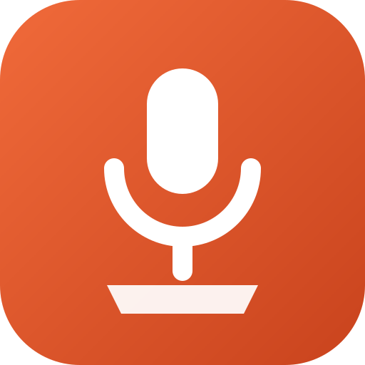

<!doctype html>
<html lang="es">
<head>
<meta charset="utf-8">
<meta name="viewport" content="width=device-width, initial-scale=1, viewport-fit=cover">
<meta name="theme-color" content="#e2572b">
<meta name="apple-mobile-web-app-capable" content="yes">
<meta name="mobile-web-app-capable" content="yes">
<meta name="apple-mobile-web-app-status-bar-style" content="default">
<meta name="apple-mobile-web-app-title" content="Tribuna">
<meta name="robots" content="noindex">
<title>Tribuna · Oratoria</title>
<link rel="manifest" href="./manifest.webmanifest">
<link rel="icon" href="./icon.svg" type="image/svg+xml">
<link rel="apple-touch-icon" href="./icon-192.png">
<style>
:root{
  --bg:#f7f5f1;--surface:#fff;--surface2:#efece6;--text:#1d1c1a;--muted:#6d685f;--line:#e3dfd7;
  --accent:#e2572b;--accent-ink:#fff;--accent-soft:#fde7dd;--ok:#2d8a57;--ok-soft:#dff2e7;--warn:#b7790c;--warn-soft:#fbf0d7;--bad:#c4402e;
  --chart:#3b5bdb;--band:rgba(45,138,87,.12);--shadow:0 1px 2px rgba(0,0,0,.05),0 4px 14px rgba(0,0,0,.05);
  color-scheme:light;
}
@media (prefers-color-scheme:dark){:root{
  --bg:#131211;--surface:#1d1c1a;--surface2:#282623;--text:#f3f0ea;--muted:#a39e95;--line:#33302c;
  --accent:#ff7a4d;--accent-ink:#1a0e09;--accent-soft:#3b2219;--ok:#5cc58b;--ok-soft:#173226;--warn:#e9b44c;--warn-soft:#3a2e14;--bad:#ff7b69;
  --chart:#8ea2ff;--band:rgba(92,197,139,.13);--shadow:none;color-scheme:dark;
}}
*{box-sizing:border-box;-webkit-tap-highlight-color:transparent}
html,body{margin:0;background:var(--bg);color:var(--text)}
body{font:16px/1.45 system-ui,-apple-system,"Segoe UI",Roboto,sans-serif;min-height:100dvh;-webkit-font-smoothing:antialiased}
main{max-width:560px;margin:0 auto;padding:calc(env(safe-area-inset-top) + 16px) 16px calc(env(safe-area-inset-bottom) + 96px)}
main.run{padding-bottom:calc(env(safe-area-inset-bottom) + 24px)}
h1{font-size:1.6rem;line-height:1.2;margin:.2em 0 .4em;letter-spacing:-.01em}
h2{font-size:1.15rem;margin:1.4em 0 .6em}
h3{font-size:1rem;margin:0 0 .3em}
p{margin:.4em 0}
.muted{color:var(--muted)}.small{font-size:.86rem}.tiny{font-size:.76rem}
.card{background:var(--surface);border:1px solid var(--line);border-radius:18px;padding:16px;margin:12px 0;box-shadow:var(--shadow)}
.card.accent{background:var(--accent-soft);border-color:transparent}
.row{display:flex;gap:10px;align-items:center}.row.wrap{flex-wrap:wrap}.between{justify-content:space-between}.grow{flex:1;min-width:0}
.grid2{display:grid;grid-template-columns:1fr 1fr;gap:10px}.grid3{display:grid;grid-template-columns:repeat(3,1fr);gap:8px}
.btn{appearance:none;border:0;border-radius:14px;padding:13px 18px;font:600 1rem system-ui,sans-serif;background:var(--surface2);color:var(--text);cursor:pointer;display:inline-flex;align-items:center;justify-content:center;gap:8px;text-decoration:none;min-height:48px}
.btn.primary{background:var(--accent);color:var(--accent-ink)}
.btn.ghost{background:transparent;border:1px solid var(--line)}
.btn.block{width:100%}.btn.sm{padding:8px 12px;min-height:36px;font-size:.88rem;border-radius:11px}
.btn.danger{color:var(--bad)}
.btn:active{transform:scale(.98)}
.chip{display:inline-flex;align-items:center;gap:4px;font-size:.75rem;font-weight:600;padding:3px 9px;border-radius:99px;background:var(--surface2);color:var(--muted)}
.chip.ok{background:var(--ok-soft);color:var(--ok)}.chip.warn{background:var(--warn-soft);color:var(--warn)}.chip.acc{background:var(--accent-soft);color:var(--accent)}
.stat{background:var(--surface);border:1px solid var(--line);border-radius:16px;padding:12px}
.stat b{display:block;font-size:1.45rem;line-height:1.1;font-variant-numeric:tabular-nums}
.stat span{font-size:.78rem;color:var(--muted)}
.bar{height:8px;border-radius:99px;background:var(--surface2);overflow:hidden}
.bar>i{display:block;height:100%;background:var(--accent);border-radius:99px;transition:width .25s}
.list{list-style:none;padding:0;margin:0}
.item{display:flex;gap:12px;align-items:center;padding:12px 0;border-top:1px solid var(--line);color:inherit;text-decoration:none;cursor:pointer}
.item:first-child{border-top:0}
.ico{width:40px;height:40px;border-radius:12px;background:var(--surface2);display:grid;place-items:center;font-size:1.2rem;flex:none}
.done .ico{background:var(--ok-soft)}
.chev{color:var(--muted);flex:none}
nav.tabs{position:fixed;left:0;right:0;bottom:0;background:color-mix(in srgb,var(--surface) 92%,transparent);backdrop-filter:blur(12px);-webkit-backdrop-filter:blur(12px);border-top:1px solid var(--line);display:flex;justify-content:center;padding-bottom:env(safe-area-inset-bottom);z-index:10}
nav.tabs a{flex:1;max-width:140px;display:flex;flex-direction:column;align-items:center;gap:2px;padding:9px 0 8px;font-size:.7rem;font-weight:600;color:var(--muted);text-decoration:none}
nav.tabs a.on{color:var(--accent)}
nav.tabs svg{width:24px;height:24px}
label.f{display:block;font-weight:600;font-size:.9rem;margin:14px 0 6px}
input[type=text],input[type=number],input[type=date],textarea,select{width:100%;font:inherit;color:inherit;background:var(--surface);border:1px solid var(--line);border-radius:12px;padding:11px 12px}
textarea{min-height:84px;resize:vertical}
input:focus,textarea:focus,select:focus{outline:2px solid var(--accent);outline-offset:-1px;border-color:transparent}
.hint{font-size:.8rem;color:var(--muted);margin:4px 2px 0}
.seg{display:flex;background:var(--surface2);border-radius:12px;padding:3px;gap:3px}
.seg button{flex:1;border:0;background:transparent;font:600 .86rem system-ui,sans-serif;color:var(--muted);padding:9px 4px;border-radius:9px;cursor:pointer}
.seg button.on{background:var(--surface);color:var(--text);box-shadow:var(--shadow)}
.rates{display:flex;gap:6px;margin-top:6px}
.rates button{flex:1;height:42px;border-radius:11px;border:1px solid var(--line);background:var(--surface);font:700 1rem system-ui;color:var(--text);cursor:pointer}
.rates button.on{background:var(--accent);border-color:var(--accent);color:var(--accent-ink)}
.prompt{font-size:1.25rem;font-weight:650;line-height:1.35;padding:18px;border-radius:16px;background:var(--accent-soft);margin:12px 0}
.prompt.pre{white-space:pre-line}
.timer{font-size:4.2rem;font-weight:750;text-align:center;font-variant-numeric:tabular-nums;letter-spacing:-.02em;line-height:1;margin:10px 0 8px}
.timer.over{color:var(--bad)}
.live-stats{display:grid;grid-template-columns:repeat(3,1fr);gap:8px;margin:14px 0}
.live-stats div{text-align:center;background:var(--surface);border:1px solid var(--line);border-radius:14px;padding:8px}
.live-stats b{display:block;font-size:1.4rem;font-variant-numeric:tabular-nums}
.live-stats span{font-size:.72rem;color:var(--muted)}
.transcript{font-size:.92rem;color:var(--muted);min-height:2.8em;max-height:5.6em;overflow:hidden;display:flex;flex-direction:column;justify-content:flex-end}
mark{background:var(--warn-soft);color:var(--warn);border-radius:4px;padding:0 2px}
video.cam{width:100%;max-height:34vh;object-fit:cover;border-radius:16px;transform:scaleX(-1);background:#000;display:block}
video.play,audio.play{width:100%;border-radius:12px;margin-top:8px}
.breath{width:220px;height:220px;margin:24px auto;border-radius:50%;background:radial-gradient(circle at 40% 35%,var(--accent-soft),color-mix(in srgb,var(--accent) 45%,var(--accent-soft)));display:grid;place-items:center;transform:scale(.62);transition:transform 4s ease-in-out}
.breath.in{transform:scale(1)}.breath.hold{transform:scale(1)}.breath.out{transform:scale(.62);transition-duration:6s}
.breath b{font-size:1.3rem;transform:scale(1)}
.steps{padding-left:1.2em;margin:.4em 0}.steps li{margin:.35em 0}
.dots{display:flex;gap:6px;justify-content:center;margin:4px 0 10px}.dots i{width:28px;height:5px;border-radius:9px;background:var(--surface2)}.dots i.on{background:var(--accent)}.dots i.ok{background:var(--ok)}
.toast{position:fixed;left:50%;bottom:calc(env(safe-area-inset-bottom) + 84px);transform:translateX(-50%);background:var(--text);color:var(--bg);padding:10px 16px;border-radius:12px;font-size:.9rem;font-weight:600;z-index:50;max-width:90vw;text-align:center;animation:pop .2s ease-out}
@keyframes pop{from{opacity:0;transform:translate(-50%,8px)}}
.path{display:flex;gap:6px;margin:10px 0}
.path i{flex:1;height:8px;border-radius:9px;background:var(--surface2)}.path i.ok{background:var(--ok)}.path i.cur{background:var(--accent)}
.chart svg{width:100%;height:auto;display:block}
.chart text{fill:var(--muted);font-size:10px;font-family:system-ui,sans-serif}
.empty-chart{padding:22px 8px;text-align:center;color:var(--muted);font-size:.88rem}
.tip{display:flex;gap:10px;font-size:.92rem}
.cardnav{display:flex;gap:8px;margin-top:10px}
.cue{min-height:140px;font-size:1.15rem;line-height:1.45}
.cue small{display:block;font-size:.75rem;font-weight:700;text-transform:uppercase;letter-spacing:.06em;color:var(--accent);margin-bottom:6px}
details summary{cursor:pointer;font-weight:600;padding:6px 0}
.hero-ring{width:74px;height:74px;flex:none}
.check{display:flex;gap:8px;font-size:.9rem;margin:4px 0}.check .y{color:var(--ok)}.check .n{color:var(--muted)}
.cmp{display:grid;grid-template-columns:92px 1fr 34px;gap:8px;align-items:center;font-size:.85rem;margin:8px 0}
.cmp .bars{display:flex;flex-direction:column;gap:3px}
.cmp .bars i{display:block;height:7px;border-radius:9px}
.legend{display:flex;gap:14px;font-size:.78rem;color:var(--muted);margin-top:6px}.legend i{display:inline-block;width:10px;height:10px;border-radius:3px;margin-right:4px;vertical-align:-1px}
</style>
</head>
<body>
<main id="app"></main>
<nav class="tabs" id="tabs"></nav>
<script>
"use strict";
/* ============================================================
   Tribuna — práctica de oratoria. Todo vive en este archivo:
   datos de ejercicios, estado (localStorage), vistas y el
   "runner" que guía, graba y analiza cada práctica.
   ============================================================ */

// ---------- utilidades ----------
const $ = (s, r = document) => r.querySelector(s);
const esc = s => String(s ?? "").replace(/[&<>"']/g, c => ({ "&": "&amp;", "<": "&lt;", ">": "&gt;", '"': "&quot;", "'": "&#39;" }[c]));
const norm = s => String(s || "").toLowerCase().normalize("NFD").replace(/[̀-ͯ]/g, "");
const uid = () => Date.now().toString(36) + Math.random().toString(36).slice(2, 7);
const sleep = ms => new Promise(r => setTimeout(r, ms));
const pad = n => String(n).padStart(2, "0");
const fmtTime = s => { s = Math.max(0, Math.round(s)); return `${Math.floor(s / 60)}:${pad(s % 60)}`; };
const dayKey = d => { d = new Date(d); return `${d.getFullYear()}-${pad(d.getMonth() + 1)}-${pad(d.getDate())}`; };
const hash = str => { let h = 2166136261; for (const c of str) { h ^= c.charCodeAt(0); h = Math.imul(h, 16777619); } return h >>> 0; };
const pick = (arr, avoid) => { if (!arr.length) return null; let v, n = 0; do { v = arr[Math.floor(Math.random() * arr.length)]; } while (v === avoid && arr.length > 1 && n++ < 10); return v; };
const avg = a => a.length ? a.reduce((x, y) => x + y, 0) / a.length : null;
const round1 = v => v == null ? null : Math.round(v * 10) / 10;
function toast(msg, ms = 2400) { const t = document.createElement("div"); t.className = "toast"; t.textContent = msg; document.body.appendChild(t); setTimeout(() => t.remove(), ms); }
const vibrate = p => { try { navigator.vibrate && navigator.vibrate(p); } catch (e) {} };
const fmtDate = ts => new Date(ts).toLocaleDateString("es", { day: "numeric", month: "short" });

// ---------- contenido ----------
const MODULES = [
  { id: "voz", icon: "🌬️", title: "Voz y respiración", desc: "La base: respirar desde el abdomen, proyectar sin gritar, usar el énfasis y las pausas." },
  { id: "claridad", icon: "🎯", title: "Claridad y ritmo", desc: "Articular bien, controlar la velocidad y reemplazar las muletillas por silencios." },
  { id: "estructura", icon: "🧱", title: "Estructura", desc: "Fórmulas para ordenar ideas: PREP, problema-solución, aperturas y cierres que se recuerdan." },
  { id: "impro", icon: "⚡", title: "Improvisación", desc: "Pensar de pie: responder con orden cuando no tuviste tiempo de preparar." },
  { id: "historias", icon: "📖", title: "Storytelling", desc: "Historias con conflicto, detalle y personajes: lo que la audiencia de verdad recuerda." },
  { id: "presencia", icon: "🧍", title: "Presencia escénica", desc: "Postura, mirada y gestos que acompañan al mensaje. Usá la cámara como espejo." },
];
const MODMAP = Object.fromEntries(MODULES.map(m => [m.id, m]));

const TOPICS = ["Tu comida favorita y por qué", "Un lugar al que volverías siempre", "La mejor decisión que tomaste", "Un libro, serie o película que recomendarías", "Qué harías con un día libre extra por semana", "Una habilidad que te gustaría aprender", "El mejor consejo que te dieron", "Cómo sería tu ciudad ideal", "Una persona que admirás", "Lo que aprendiste de un error", "Tu rutina de la mañana", "Si pudieras cenar con alguien de la historia, ¿con quién?", "Qué cambiarías de tu trabajo o estudio", "Un viaje que te marcó", "Por qué vale la pena aprender a hablar en público", "Tu deporte o hobby", "La tecnología que más te cambió la vida", "Un recuerdo de la infancia", "Qué significa para vos el éxito", "Un objeto que llevarías a una isla desierta", "Tu estación del año favorita", "Cómo convencerías a alguien de leer más", "El trabajo de tus sueños", "Algo que siempre te hace reír"];
const THESES = ["La importancia de dormir bien", "Por qué todos deberíamos aprender a cocinar", "El valor de equivocarse", "Cómo la lectura cambia vidas", "El poder de los hábitos pequeños", "Por qué viajar solo al menos una vez", "La importancia de saber escuchar", "Cuidar el ambiente desde casa", "Por qué aprender un idioma nuevo", "El valor de pedir ayuda"];
const WORDS = ["paraguas", "dragón", "biblioteca", "tren", "abuela", "chocolate", "satélite", "bicicleta", "volcán", "pirata", "espejo", "semáforo", "guitarra", "desierto", "reloj", "faro", "mariposa", "castillo", "robot", "tormenta", "mercado", "llave", "globo", "pingüino", "montaña", "carta", "museo", "cohete", "jardín", "sombrero", "puente", "océano", "violín", "fantasma", "helado", "brújula", "escalera", "teatro", "lámpara", "camello", "cuaderno", "estrella", "tortuga", "ventana", "martillo", "circo", "isla", "nube", "zapato", "mapa", "pizza", "ascensor", "bosque", "cámara", "dinosaurio", "secreto", "maleta", "campana", "telescopio"];

const EX = [
  // --- Voz
  { id: "respiracion", mod: "voz", type: "breath", title: "Respiración diafragmática", target: 112, cycles: 8,
    goal: "Bajar la ansiedad y apoyar la voz en el abdomen, no en el pecho.",
    steps: ["Sentate con la espalda recta y una mano sobre el abdomen.", "Inhalá por la nariz 4 tiempos: que se infle la panza, no los hombros.", "Retené 4 tiempos.", "Exhalá por la boca 6 tiempos, despacio, como si soplaras una vela sin apagarla."],
    tip: "Hacelo 5 minutos antes de cualquier presentación real: la exhalación larga calma el sistema nervioso." },
  { id: "proyeccion", mod: "voz", title: "Escalera de volumen", target: 60, prep: 0,
    goal: "Proyectar la voz desde el abdomen sin forzar la garganta.",
    steps: ["Contá del 1 al 10 subiendo el volumen en cada número (sin gritar).", "Bajá del 10 al 1 hasta casi susurrar, pero que se entienda.", "Decí la frase de abajo en volumen 3, 6 y 9."],
    prompts: ["Buenas noches a todos, gracias por estar acá.", "Lo que voy a contarles cambió mi manera de pensar.", "Hoy quiero proponerles algo diferente.", "Esto no es el final: es el comienzo."],
    tip: "Si te raspa la garganta, estás empujando con el cuello. Apoyá en el abdomen." },
  { id: "enfasis", mod: "voz", title: "Lectura con énfasis", target: 90, prep: 0,
    goal: "Descubrir cómo el énfasis cambia el significado de una frase.",
    steps: ["Leé la frase en voz alta varias veces.", "Cada vez, enfatizá una palabra distinta (más fuerte, más lenta o con una pausa antes).", "Escuchá la grabación: ¿se nota el cambio de sentido?"],
    prompts: ["Yo no dije que ella tomó el dinero.", "Hoy vamos a cambiar la forma en que trabajamos.", "Esta es la mejor idea que tuvimos en el año.", "Nunca pensé que esto podría funcionar.", "Ustedes tienen la solución en sus manos."],
    tip: "La palabra más importante de cada frase merece más tiempo, no solo más volumen." },
  { id: "pausas", mod: "voz", title: "El poder de la pausa", target: 75, prep: 0,
    goal: "Usar el silencio para dar peso a las ideas.",
    steps: ["Leé el texto respetando las marcas.", "« / » = pausa corta (1 segundo).", "« // » = pausa larga (2–3 segundos), mirando al frente.", "Repetí hasta que las pausas largas no te incomoden."],
    prompts: ["Hace cinco años / tomé una decisión // que cambió todo. / No fue fácil. // Pero hoy / quiero contarles / por qué volvería a hacerlo.", "La pregunta no es si vamos a cambiar. // La pregunta es / cuándo. // Y la respuesta / es hoy.", "Imaginen por un momento / que tienen un solo minuto / para decir lo más importante de su vida. // ¿Qué dirían? //", "Todos tuvimos miedo alguna vez. // La diferencia / no está en sentirlo. // Está / en lo que hacemos después."],
    tip: "Una pausa que a vos te parece eterna, para la audiencia dura un segundo." },
  // --- Claridad
  { id: "trabalenguas", mod: "claridad", title: "Trabalenguas", target: 60, prep: 0,
    goal: "Calentar la boca y articular cada sílaba.",
    steps: ["Primera vuelta: muy lento, exagerando cada sílaba.", "Segunda: a velocidad normal.", "Tercera: rápido, sin perder ni una consonante.", "Extra: probalo con un lápiz atravesado entre los dientes y después sin él."],
    prompts: ["Tres tristes tigres tragaban trigo en un trigal.", "Pablito clavó un clavito. ¿Qué clavito clavó Pablito?", "El perro de San Roque no tiene rabo porque Ramón Ramírez se lo ha cortado.", "Erre con erre cigarro, erre con erre barril, rápido ruedan los carros cargados de azúcar del ferrocarril.", "Como poco coco como, poco coco compro.", "Pepe Pecas pica papas con un pico; con un pico pica papas Pepe Pecas.", "El cielo está enladrillado, ¿quién lo desenladrillará? El desenladrillador que lo desenladrille, buen desenladrillador será."],
    tip: "La claridad viene de la punta de la lengua y los labios, no de la velocidad." },
  { id: "sin-muletillas", mod: "claridad", title: "Un minuto sin muletillas", target: 60, prep: 15,
    goal: "Hablar 60 segundos reemplazando «eh», «este», «o sea», «bueno» por silencios.",
    steps: ["Leé el tema y pensá 15 segundos.", "Hablá un minuto seguido.", "Cuando sientas que viene una muletilla: cerrá la boca y hacé una pausa.", "Usá el botón +1 si te escuchás una que el transcriptor no detecte (como «eh»)."],
    prompts: TOPICS, metric: "fillers",
    tip: "Una pausa en silencio suena segura; una muletilla suena a duda." },
  { id: "ritmo", mod: "claridad", title: "Ritmo ideal", target: 90, prep: 20,
    goal: "Explicar algo manteniéndote entre 120 y 160 palabras por minuto.",
    steps: ["Explicá el proceso paso a paso, como si lo enseñaras.", "Mirá el contador de PPM (palabras por minuto) mientras hablás.", "Si pasás de 160, frená y hacé una pausa; si bajás de 110, subí la energía."],
    prompts: ["Cómo preparar tu comida favorita", "Cómo llegar desde tu casa a tu trabajo", "Las reglas de tu juego o deporte favorito", "Cómo organizás tu semana", "Qué hacer en tu ciudad un fin de semana", "Cómo cuidar una planta", "Cómo armar una valija para un viaje"],
    metric: "wpm", tip: "Los nervios aceleran. Más lento casi siempre suena más seguro." },
  // --- Estructura
  { id: "prep", mod: "estructura", title: "Método PREP", target: 90, prep: 30,
    goal: "Dar una opinión ordenada: Punto → Razón → Ejemplo → Punto.",
    steps: ["Punto: decí tu postura en una frase.", "Razón: explicá por qué.", "Ejemplo: contá un caso concreto o un dato.", "Punto: repetí tu postura, reforzada."],
    prompts: ["¿Es mejor trabajar desde casa o en la oficina?", "¿Deberían enseñar oratoria en la escuela?", "¿Las redes sociales nos acercan o nos alejan?", "¿Es mejor ahorrar o disfrutar el presente?", "¿Hay que leer el libro antes de ver la película?", "¿Conviene especializarse o saber un poco de todo?", "¿La puntualidad es una cuestión de respeto?", "¿Es mejor vivir en la ciudad o en el campo?", "¿Deberíamos trabajar 4 días por semana?", "¿Los videojuegos pueden enseñar algo?"],
    tip: "PREP sirve para reuniones, entrevistas y preguntas del público." },
  { id: "psb", mod: "estructura", title: "Problema → Solución → Beneficio", target: 120, prep: 45,
    goal: "Persuadir con la estructura más usada en ventas y propuestas.",
    steps: ["Problema: describilo para que la audiencia lo sienta propio.", "Solución: proponé una idea concreta.", "Beneficio: pintá cómo mejora la vida si se aplica.", "Cerrá con una invitación a actuar."],
    prompts: ["Las reuniones que podrían haber sido un mail", "El tráfico en las horas pico", "La falta de tiempo para hacer ejercicio", "El exceso de notificaciones en el celular", "El desperdicio de comida en casa", "Los nervios antes de una presentación", "La dificultad para ahorrar", "La soledad en las grandes ciudades", "La falta de sueño"],
    tip: "Pasá más tiempo en el problema de lo que creés: si no duele, la solución no importa." },
  { id: "ppf", mod: "estructura", title: "Pasado · Presente · Futuro", target: 90, prep: 30,
    goal: "Organizar cualquier tema en una línea de tiempo fácil de seguir.",
    steps: ["Pasado: cómo era antes.", "Presente: cómo es hoy y qué cambió.", "Futuro: hacia dónde va o qué te gustaría que pase."],
    prompts: ["Tu carrera profesional", "Tu barrio o ciudad", "La forma en que nos comunicamos", "Tu relación con el deporte", "La educación", "Tu manera de aprender", "El trabajo en tu rubro", "Tu relación con la tecnología"],
    tip: "Anunciá la estructura al principio: «les voy a contar de dónde venimos, dónde estamos y adónde vamos»." },
  { id: "aperturas", mod: "estructura", title: "Tres aperturas", target: 90, prep: 45,
    goal: "Probar tres formas de capturar la atención en los primeros 20 segundos.",
    steps: ["Apertura 1: una pregunta que haga pensar.", "Apertura 2: un dato o afirmación sorprendente.", "Apertura 3: una mini historia («El martes pasado, a las 7 de la mañana…»).", "Al escuchar la grabación, elegí la más fuerte."],
    prompts: THESES, tip: "Nunca empieces con «Bueno, eh, mi nombre es…». Empezá con el gancho y presentate después." },
  { id: "cierres", mod: "estructura", title: "Cierre memorable", target: 60, prep: 30,
    goal: "Terminar con fuerza en lugar de con «y bueno, eso es todo».",
    steps: ["Resumí tu idea principal en una sola frase.", "Volvé a la imagen o pregunta del inicio (cerrá el círculo).", "Terminá con una llamada a la acción concreta.", "Después de la última palabra: 2 segundos de silencio."],
    prompts: THESES, tip: "La última frase es la que más se recuerda. Escribila y memorizala." },
  // --- Improvisación
  { id: "tema-azar", mod: "impro", title: "Tema sorpresa", target: 60, prep: 10,
    goal: "Hablar un minuto con orden sobre algo que no esperabas.",
    steps: ["Tenés 10 segundos para pensar.", "Usá un esqueleto simple: idea principal + dos razones o ejemplos + cierre.", "Si te trabás, hacé una pausa y volvé a tu idea principal."],
    prompts: TOPICS, tip: "No busques la respuesta perfecta: elegí la primera idea decente y desarrollala." },
  { id: "palabras", mod: "impro", title: "Puente de palabras", target: 90, prep: 15,
    goal: "Conectar tres palabras al azar en una historia coherente.",
    steps: ["Mirá las tres palabras.", "Inventá una historia que las use en orden.", "Tiene que tener inicio, algo que sale mal, y un final."],
    words: true, tip: "La creatividad mejora con la práctica: los primeros intentos siempre son raros." },
  { id: "abogado", mod: "impro", title: "Abogado del diablo", target: 90, prep: 20,
    goal: "Defender con convicción una postura (aunque no sea la tuya).",
    steps: ["Leé la afirmación: tenés que defenderla.", "Buscá dos argumentos y un ejemplo.", "Hablá con convicción: tono firme, sin «creo que» ni «capaz»."],
    prompts: ["Las vacaciones están sobrevaloradas.", "Los lunes son el mejor día de la semana.", "Deberían prohibirse los celulares en las reuniones.", "Es mejor llegar 30 minutos antes a todo.", "Las películas viejas son mejores que las nuevas.", "Nadie debería trabajar más de 6 horas por día.", "El invierno es mejor que el verano.", "Hacer la cama todos los días es una pérdida de tiempo.", "Los libros en papel van a desaparecer."],
    tip: "Entender el otro lado te prepara para las objeciones del público." },
  { id: "simple", mod: "impro", title: "Explicalo simple", target: 60, prep: 15,
    goal: "Explicar algo complejo para que lo entienda un chico de 10 años.",
    steps: ["Nada de jerga ni siglas.", "Usá una comparación con algo cotidiano («es como…»).", "Terminá verificando: «¿Se entiende? Es como…»."],
    prompts: ["Qué es internet", "Cómo funciona un banco", "Qué es la inflación", "Por qué llueve", "Qué es la inteligencia artificial", "Cómo funciona una vacuna", "Qué hace tu trabajo", "Qué es la gravedad", "Cómo vuela un avión"],
    tip: "Si no lo podés explicar simple, todavía no lo entendiste del todo." },
  // --- Storytelling
  { id: "tres-actos", mod: "historias", title: "Historia en 3 actos", target: 120, prep: 60,
    goal: "Contar una experiencia real con situación, conflicto y resolución.",
    steps: ["Acto 1 — Situación: dónde, cuándo, quién.", "Acto 2 — Conflicto: qué salió mal o qué estaba en juego.", "Acto 3 — Resolución: cómo terminó y qué aprendiste.", "Cerrá con la lección en una frase."],
    prompts: ["Una vez que te perdiste", "Tu primer día en un trabajo o escuela", "Un momento en que tuviste que ser valiente", "Un viaje que no salió como esperabas", "Algo que aprendiste de alguien inesperado", "Un momento en que fallaste y te levantaste", "Una mascota que marcó tu vida", "Una sorpresa que no viste venir", "Un cambio importante en tu vida"],
    tip: "Sin conflicto no hay historia, solo un relato de hechos." },
  { id: "sentidos", mod: "historias", title: "Detalle sensorial", target: 90, prep: 30,
    goal: "Hacer que la audiencia «vea» la escena usando los cinco sentidos.",
    steps: ["Describí el lugar o momento.", "Incluí al menos: algo que se ve, se oye, se huele, se toca y se saborea.", "Hablá en presente, como si estuvieras ahí."],
    prompts: ["Tu desayuno ideal", "La casa de tu infancia", "Una playa al atardecer", "Un mercado lleno de gente", "El primer día de lluvia del año", "Tu lugar favorito de la ciudad", "Una cocina un domingo al mediodía", "Un recital en vivo"],
    tip: "Un detalle concreto («el olor a pan tostado») vale más que diez adjetivos." },
  { id: "personajes", mod: "historias", title: "Diálogo y personajes", target: 90, prep: 30,
    goal: "Dar vida a una historia con diálogos y voces distintas.",
    steps: ["Contá la historia incluyendo al menos 3 líneas de diálogo.", "Cambiá levemente la voz o el ritmo para cada personaje.", "Usá el cuerpo: girá la cabeza hacia un lado para cada personaje."],
    prompts: ["Una discusión graciosa con alguien de tu familia", "Cuando le pediste algo difícil a alguien", "Una conversación que te cambió la perspectiva", "El día que conociste a alguien importante", "Un malentendido en un negocio o restaurante"],
    tip: "«Y me dice: ‹¿Vos estás seguro?›» engancha más que «me preguntó si estaba seguro»." },
  // --- Presencia
  { id: "postura", mod: "presencia", title: "Postura y anclaje", target: 60, prep: 15, cam: true,
    goal: "Hablar de pie, firme, sin balancearte ni esconder las manos.",
    steps: ["Parate con los pies al ancho de los hombros, peso repartido.", "Manos a la altura del ombligo, libres (no en los bolsillos ni cruzadas).", "Apoyá el teléfono a la altura de tus ojos y mirá la cámara como si fuera una persona.", "Al revisar el video: ¿te balanceaste? ¿tocaste tu cara o ropa?"],
    prompts: ["Presentate: quién sos, a qué te dedicás y qué te gustaría lograr este año.", "Contá qué hiciste el último fin de semana.", "Recomendá tu lugar favorito para comer."],
    tip: "Quieto no es rígido: anclá los pies y dejá que se muevan las manos." },
  { id: "mirada", mod: "presencia", title: "Mirada en tres zonas", target: 90, prep: 20, cam: true,
    goal: "Repartir la mirada en toda la audiencia, una idea por persona.",
    steps: ["Imaginá tres personas: a la izquierda, al centro y a la derecha.", "Decí una idea completa mirando a cada una antes de cambiar.", "No barras con la mirada: posala, terminá la frase, y recién ahí movela."],
    prompts: THESES, tip: "Una frase, una persona. La mirada que salta todo el tiempo transmite nervios." },
  { id: "gestos", mod: "presencia", title: "Gestos con intención", target: 90, prep: 20, cam: true,
    goal: "Que las manos ilustren lo que decís: tamaños, números, contrastes.",
    steps: ["Cada vez que digas un número, mostralo con los dedos.", "Para tamaños y distancias, dibujalos en el aire.", "Para contrastes («antes / después»), usá una mano para cada lado.", "Mantené los gestos dentro del «marco» entre la cintura y los hombros."],
    prompts: ["Describí el lugar donde vivís: tamaños, distancias, formas", "Explicá cómo armar un mueble", "Dá tres razones para hacer ejercicio", "Contá el pez más grande que «se te escapó»", "Explicá cómo llegar a tu casa desde la esquina", "Compará algo enorme con algo diminuto"],
    tip: "Un gesto grande y claro vale más que muchos gestos chiquitos y nerviosos." },
  { id: "elevator", mod: "presencia", title: "Presentación personal", target: 60, prep: 60, cam: true,
    goal: "Tu «elevator pitch»: quién sos, qué hacés y por qué importa, en un minuto.",
    steps: ["Gancho: una frase que despierte curiosidad.", "Quién sos y qué hacés.", "Qué valor aportás (con un ejemplo o resultado).", "Qué buscás: el pedido o próximo paso."],
    prompts: ["Presentate ante un posible cliente", "Presentate en una entrevista laboral", "Presentate en un evento de networking", "Presentá un proyecto en el que estás trabajando"],
    tip: "Ensayalo hasta que suene natural, no memorizado." },
];
const EXTRA = {
  diagnostico: { id: "diagnostico", mod: "diag", title: "Diagnóstico", target: 60, prep: 20, cam: true,
    goal: "Grabar tu punto de partida para medir tu progreso. Hacelo sin preparar demasiado.",
    steps: ["Pensá 20 segundos.", "Hablá un minuto sobre el tema.", "Evaluate con honestidad: esto no es un examen, es tu línea de base."],
    prompts: ["Presentate: quién sos, qué hacés y algo que te apasione."], tip: "Repetí el diagnóstico cada mes para comparar." },
  ensayo: { id: "ensayo", mod: "ensayo", title: "Ensayo", prep: 0, cam: true, steps: [], goal: "" },
};
const EXMAP = Object.fromEntries([...EX, ...Object.values(EXTRA)].map(e => [e.id, e]));

const RUBRIC = [
  { k: "claridad", label: "Claridad", hint: "¿Se entendió cada palabra y cada idea?" },
  { k: "estructura", label: "Estructura", hint: "¿Hubo un inicio, desarrollo y cierre claros?" },
  { k: "voz", label: "Voz y pausas", hint: "Volumen, variación, ritmo, silencios." },
  { k: "presencia", label: "Presencia", hint: "Postura, mirada, gestos (o energía, si fue solo audio)." },
  { k: "confianza", label: "Confianza", hint: "¿Cómo te sentiste mientras hablabas?" },
];

const FILLERS = [
  ["eh", "e+h+|eh+m+"], ["mmm", "m{2,}|e+m+"], ["o sea", "o sea"], ["bueno", "bueno"], ["digamos", "digamos"], ["tipo", "tipo"],
  ["viste", "viste"], ["como que", "como que"], ["en plan", "en plan"], ["básicamente", "b[aá]sicamente"], ["literalmente", "literalmente"],
  ["obviamente", "obviamente"], ["ok", "ok(?:ey|a)?|okay"], ["pues", "pues"],
];
const FILLER_RE = new RegExp(`\\b(${FILLERS.map(f => f[1]).join("|")})\\b`, "gi");

const TIPS = [
  "Los nervios no desaparecen: se aprenden a usar. Llamalos «energía».",
  "Practicá en voz alta. Repasar mentalmente no entrena la boca ni la respiración.",
  "Escuchar tu grabación incomoda al principio. Es la forma más rápida de mejorar.",
  "Una idea por frase. Frases cortas se entienden y se recuerdan mejor.",
  "Antes de hablar, preguntate: ¿qué quiero que hagan, piensen o sientan al terminar?",
  "Bajá la velocidad en lo importante y hacé una pausa justo después.",
  "Tu audiencia quiere que te vaya bien. No es un tribunal.",
  "Mejor tres ideas bien contadas que diez apuradas.",
  "Las historias personales generan más conexión que cualquier estadística.",
  "Si te olvidás de algo, hacé una pausa, respirá y volvé a tu mensaje central. Nadie sabe lo que te salteaste.",
  "Tomá agua antes de hablar y evitá lácteos justo antes: espesan la voz.",
  "Ensayá con el mismo calzado y de pie, como vas a estar el día real.",
  "Grabate una vez por semana con video: el cuerpo dice cosas que no notás.",
  "Terminá cada práctica anotando una sola cosa a mejorar la próxima vez.",
];

const SPEECH_FIELDS = [
  ["hook", "Gancho de apertura", "Una pregunta, un dato sorprendente o una mini historia que capture la atención en los primeros 15 segundos."],
  ["core", "Mensaje central", "Si la audiencia recordara una sola frase, ¿cuál sería? Idealmente menos de 15 palabras."],
  ["p1", "Idea 1", "Primera idea que sostiene tu mensaje. Sumá un dato o un ejemplo."],
  ["p2", "Idea 2", "Segunda idea. Cada idea debería poder resumirse en una línea."],
  ["p3", "Idea 3 (opcional)", "Tres ideas es el número mágico: más cuesta recordarlas."],
  ["story", "Historia o ejemplo", "Una experiencia concreta con personajes, conflicto y resolución. En el ensayo aparece antes del cierre."],
  ["close", "Cierre", "Resumí en una frase y volvé al gancho para cerrar el círculo."],
  ["cta", "Llamada a la acción", "¿Qué querés que la audiencia piense, sienta o haga al salir?"],
];
const STOP = new Set("porque cuando donde tambien entonces mientras siempre despues antes nuestro nuestra nuestros nuestras ustedes ellos ellas estos estas aquel aquella sobre entre hasta desde hacia contra durante todos todas tiene tienen tenemos puede pueden podemos hacer hacen hacemos estar estan estamos siendo sería seria quiero quieren queremos cosas mucho muchos muchas menos otros otras otro porque quizas tanto cada algun alguna algunos algunas mismo misma vamos voy esta este esto eso esos esas aqui ahora".split(" "));

const LEVELS = [[0, "Principiante"], [100, "Aprendiz"], [300, "Expositor"], [650, "Orador"], [1100, "Comunicador"], [1800, "Inspirador"], [2800, "Maestro"]];

// ---------- estado ----------
const STORE_KEY = "tribuna.v1";
const defaultState = () => ({ version: 1, profile: { name: "", goal: 4, lang: "es-AR", sr: true, onboarded: false, self: null }, sessions: [], speeches: [] });
function load() {
  try {
    const d = JSON.parse(localStorage.getItem(STORE_KEY));
    if (d && d.version) { const def = defaultState(); return { ...def, ...d, profile: { ...def.profile, ...d.profile } }; }
  } catch (e) {}
  return defaultState();
}
let S = load();
function save() { try { localStorage.setItem(STORE_KEY, JSON.stringify(S)); } catch (e) { toast("No se pudo guardar (almacenamiento lleno)"); } }
try { navigator.storage && navigator.storage.persist && navigator.storage.persist(); } catch (e) {}

// ---------- análisis ----------
function analyze(text, dur, manual = 0) {
  const words = (String(text).match(/[\p{L}\p{N}]+/gu) || []).length;
  const top = {};
  let auto = 0;
  const low = String(text).toLowerCase();
  for (const m of low.matchAll(FILLER_RE)) {
    auto++;
    const f = FILLERS.find(f => new RegExp(`^(?:${f[1]})$`, "i").test(m[1]));
    const k = f ? f[0] : m[1];
    top[k] = (top[k] || 0) + 1;
  }
  if (manual) top["(marcadas a mano)"] = manual;
  const fillers = auto + manual;
  const mins = dur / 60;
  const wpm = words >= 10 && dur >= 15 ? Math.round(words / mins) : null;
  const fpm = mins > 0.15 ? round1(fillers / mins) : null;
  return { words, wpm, fillers, fpm, top };
}
function highlight(text) { return esc(text).replace(FILLER_RE, m => `<mark>${m}</mark>`); }
function keywords(text) { return [...new Set(norm(text).match(/[a-z]{5,}/g) || [])].filter(w => !STOP.has(w)); }
function coverage(speech, transcript) {
  const kws = keywords(speechText(speech));
  if (kws.length < 3 || !transcript) return null;
  const said = new Set(norm(transcript).match(/[a-z]{5,}/g) || []);
  return Math.round(kws.filter(k => said.has(k)).length / kws.length * 100);
}
function wpmBand(w) { if (w == null) return ["—", ""]; if (w < 110) return ["Lento", "warn"]; if (w <= 165) return ["Ideal", "ok"]; return ["Rápido", "warn"]; }
function feedback(R) {
  const a = R.analysis || {}, out = [];
  if (R.ex.type === "breath") return ["Repetí esta respiración antes de cada práctica y antes de hablar en público."];
  const ratio = R.dur / R.target;
  if (ratio < 0.7) out.push("Te quedaste corto de tiempo: desarrollá cada idea con un ejemplo concreto.");
  else if (ratio > 1.25) out.push("Te pasaste del tiempo: recortá a lo esencial. Respetar el tiempo es respetar a la audiencia.");
  if (a.wpm != null) {
    if (a.wpm > 170) out.push(`Hablaste rápido (${a.wpm} ppm). Probá hacer una pausa al final de cada idea.`);
    else if (a.wpm < 105) out.push(`Ritmo lento (${a.wpm} ppm). Subí un poco la energía, sobre todo en los momentos clave.`);
    else out.push(`Buen ritmo (${a.wpm} ppm): dentro del rango cómodo de escuchar.`);
  }
  if (a.fpm != null) {
    if (a.fpm > 4) out.push(`Muchas muletillas (${a.fpm}/min). Cuando sientas que viene una, cerrá la boca y respirá.`);
    else if (a.fpm > 1.5) out.push(`Algunas muletillas (${a.fpm}/min). Vas bien: apuntá a menos de 1,5 por minuto.`);
    else if (a.words > 20) out.push("¡Casi sin muletillas! Excelente control.");
  }
  if (R.coverage != null) out.push(R.coverage >= 70 ? `Cubriste el ${R.coverage}% de las palabras clave de tu guion.` : `Cubriste el ${R.coverage}% de las palabras clave: repasá las ideas que se te escaparon.`);
  if (R.ex.tip) out.push(R.ex.tip);
  return out;
}

// ---------- estadísticas ----------
const exCounts = () => S.sessions.reduce((o, s) => (o[s.ex] = (o[s.ex] || 0) + 1, o), {});
const totalXP = () => S.sessions.reduce((a, s) => a + (s.xp || 0), 0);
function levelInfo(xp = totalXP()) {
  let i = 0; while (i < LEVELS.length - 1 && xp >= LEVELS[i + 1][0]) i++;
  const cur = LEVELS[i][0], next = LEVELS[i + 1] ? LEVELS[i + 1][0] : null;
  return { n: i + 1, name: LEVELS[i][1], xp, pct: next ? (xp - cur) / (next - cur) * 100 : 100, toNext: next ? next - xp : 0 };
}
function xpFor(s) { const r = Object.values(s.rubric || {}); return 10 + Math.round(s.dur / 60 * 4) + (r.length ? Math.round(avg(r) * 2) : 0); }
function practiceDays() { return new Set(S.sessions.map(s => dayKey(s.ts))); }
function streak() {
  const days = practiceDays(); let n = 0; const d = new Date();
  if (!days.has(dayKey(d))) d.setDate(d.getDate() - 1);
  while (days.has(dayKey(d))) { n++; d.setDate(d.getDate() - 1); }
  return n;
}
function bestStreak() {
  const days = [...practiceDays()].sort(); let best = 0, cur = 0, prev = null;
  for (const k of days) { const t = new Date(k + "T12:00").getTime(); cur = prev && t - prev < 1.5 * 864e5 ? cur + 1 : 1; best = Math.max(best, cur); prev = t; }
  return best;
}
function weekStart(d = new Date()) { d = new Date(d); d.setHours(0, 0, 0, 0); d.setDate(d.getDate() - ((d.getDay() + 6) % 7)); return d; }
function daysThisWeek() { const ws = weekStart().getTime(); return new Set(S.sessions.filter(s => s.ts >= ws).map(s => dayKey(s.ts))).size; }
function modProgress(id) { const c = exCounts(); const ex = EX.filter(e => e.mod === id); return { done: ex.filter(e => c[e.id]).length, total: ex.length }; }
function currentModule() { return MODULES.find(m => { const p = modProgress(m.id); return p.done < p.total; }) || MODULES[MODULES.length - 1]; }
function todayPlan() {
  const day = dayKey(new Date()), c = exCounts();
  const warm = hash(day) % 2 ? "respiracion" : "trabalenguas";
  const cur = currentModule();
  const pool = EX.filter(e => e.mod === cur.id && e.id !== warm && e.type !== "breath");
  const main = pool.find(e => !c[e.id]) || pool.slice().sort((a, b) => (c[a.id] || 0) - (c[b.id] || 0))[0] || EXMAP["tema-azar"];
  const third = EX.filter(e => (e.mod === "impro" || e.mod === "historias") && e.id !== main.id);
  return [warm, main.id, third[hash(day + "x") % third.length].id];
}
const doneToday = id => S.sessions.some(s => s.ex === id && dayKey(s.ts) === dayKey(new Date()));
const baseline = () => S.sessions.find(s => s.ex === "diagnostico");
const rubricAvg = s => { const v = Object.values(s.rubric || {}); return v.length ? avg(v) : null; };

// ---------- gráficos (SVG) ----------
function lineChart(vals, { band, min = 0, fmt = v => v, unit = "" } = {}) {
  const pts = vals.filter(v => v.y != null);
  if (pts.length < 2) return `<div class="empty-chart">Necesitás al menos 2 prácticas con este dato.</div>`;
  const W = 320, H = 150, L = 32, Rr = 10, T = 12, B = 22;
  const ys = pts.map(p => p.y);
  let lo = Math.min(min, ...ys), hi = Math.max(...ys);
  if (band) { lo = Math.min(lo, band[0]); hi = Math.max(hi, band[1]); }
  if (hi === lo) hi = lo + 1; hi += (hi - lo) * 0.12;
  const x = i => L + (pts.length === 1 ? 0 : i / (pts.length - 1)) * (W - L - Rr);
  const y = v => T + (1 - (v - lo) / (hi - lo)) * (H - T - B);
  let g = "";
  for (let k = 0; k <= 3; k++) { const v = lo + (hi - lo) * k / 3; g += `<line x1="${L}" x2="${W - Rr}" y1="${y(v)}" y2="${y(v)}" stroke="var(--line)" stroke-width="1"/><text x="${L - 6}" y="${y(v) + 3}" text-anchor="end">${fmt(Math.round(v * 10) / 10)}</text>`; }
  if (band) g += `<rect x="${L}" width="${W - L - Rr}" y="${y(band[1])}" height="${y(band[0]) - y(band[1])}" fill="var(--band)"/>`;
  const d = pts.map((p, i) => `${i ? "L" : "M"}${x(i).toFixed(1)},${y(p.y).toFixed(1)}`).join("");
  const dots = pts.map((p, i) => `<circle cx="${x(i)}" cy="${y(p.y)}" r="${i === pts.length - 1 ? 4.5 : 2.6}" fill="${i === pts.length - 1 ? "var(--accent)" : "var(--chart)"}"/>`).join("");
  const last = pts[pts.length - 1];
  const labels = `<text x="${L}" y="${H - 5}">${esc(pts[0].label || "")}</text><text x="${W - Rr}" y="${H - 5}" text-anchor="end">${esc(last.label || "")}</text>`;
  return `<svg viewBox="0 0 ${W} ${H}" role="img" aria-label="Último valor ${fmt(last.y)}${unit}">${g}<path d="${d}" fill="none" stroke="var(--chart)" stroke-width="2" stroke-linejoin="round" stroke-linecap="round"/>${dots}${labels}</svg>`;
}
function barChart(vals, goalLine) {
  const W = 320, H = 140, L = 26, Rr = 6, T = 12, B = 22;
  const hi = Math.max(5, goalLine || 0, ...vals.map(v => v.y)) * 1.12;
  const bw = (W - L - Rr) / vals.length;
  const y = v => T + (1 - v / hi) * (H - T - B);
  let g = `<line x1="${L}" x2="${W - Rr}" y1="${y(0)}" y2="${y(0)}" stroke="var(--line)"/>`;
  vals.forEach((v, i) => {
    const h = y(0) - y(v.y);
    g += `<rect x="${L + i * bw + bw * 0.18}" width="${bw * 0.64}" y="${y(v.y)}" height="${Math.max(h, v.y ? 2 : 0)}" rx="4" fill="${i === vals.length - 1 ? "var(--accent)" : "var(--chart)"}"/>`;
    if (v.y) g += `<text x="${L + i * bw + bw / 2}" y="${y(v.y) - 4}" text-anchor="middle">${v.y}</text>`;
    g += `<text x="${L + i * bw + bw / 2}" y="${H - 6}" text-anchor="middle">${esc(v.label)}</text>`;
  });
  return `<svg viewBox="0 0 ${W} ${H}" role="img" aria-label="Minutos por semana">${g}</svg>`;
}
function ring(pct, label, sub) {
  const r = 30, c = 2 * Math.PI * r, p = Math.max(0, Math.min(1, pct));
  return `<svg class="hero-ring" viewBox="0 0 74 74"><circle cx="37" cy="37" r="${r}" fill="none" stroke="var(--surface2)" stroke-width="7"/><circle cx="37" cy="37" r="${r}" fill="none" stroke="var(--accent)" stroke-width="7" stroke-linecap="round" stroke-dasharray="${c}" stroke-dashoffset="${c * (1 - p)}" transform="rotate(-90 37 37)"/><text x="37" y="38" text-anchor="middle" font-size="17" font-weight="750" fill="var(--text)">${label}</text><text x="37" y="52" text-anchor="middle" font-size="9" fill="var(--muted)">${sub}</text></svg>`;
}

// ---------- navegación ----------
const ICONS = {
  home: '<svg viewBox="0 0 24 24" fill="none" stroke="currentColor" stroke-width="2" stroke-linecap="round" stroke-linejoin="round"><path d="M3 10.5 12 3l9 7.5V20a1 1 0 0 1-1 1h-5v-6H9v6H4a1 1 0 0 1-1-1z"/></svg>',
  mic: '<svg viewBox="0 0 24 24" fill="none" stroke="currentColor" stroke-width="2" stroke-linecap="round" stroke-linejoin="round"><rect x="9" y="3" width="6" height="11" rx="3"/><path d="M5 11a7 7 0 0 0 14 0M12 18v3"/></svg>',
  doc: '<svg viewBox="0 0 24 24" fill="none" stroke="currentColor" stroke-width="2" stroke-linecap="round" stroke-linejoin="round"><path d="M14 3H6a1 1 0 0 0-1 1v16a1 1 0 0 0 1 1h12a1 1 0 0 0 1-1V8z"/><path d="M14 3v5h5M9 13h6M9 17h4"/></svg>',
  chart: '<svg viewBox="0 0 24 24" fill="none" stroke="currentColor" stroke-width="2" stroke-linecap="round" stroke-linejoin="round"><path d="M4 20V10M10 20V4M16 20v-7M22 20H2"/></svg>',
};
const TABS = [["", "Inicio", "home"], ["practicar", "Practicar", "mic"], ["discursos", "Discursos", "doc"], ["progreso", "Progreso", "chart"]];
const CHEV = '<svg class="chev" width="18" height="18" viewBox="0 0 24 24" fill="none" stroke="currentColor" stroke-width="2"><path d="m9 6 6 6-6 6"/></svg>';
function go(h) { if (location.hash === h) route(); else location.hash = h; }

function route() {
  const [v, id] = location.hash.replace(/^#\/?/, "").split("/");
  if (v !== "run" && R) { stopMedia(); R = null; }
  const app = $("#app"), tabs = $("#tabs");
  let html, tab = v || "";
  if (v === "run" && R) { html = viewRun(); tab = null; }
  else if (!S.profile.onboarded) { html = viewOnboarding(); tab = null; }
  else if (v === "practicar") html = viewPractice(id);
  else if (v === "ej" && EXMAP[id]) { startRun({ exId: id }); return; }
  else if (v === "discursos") html = viewSpeeches();
  else if (v === "discurso") { html = viewSpeechEdit(id); tab = "discursos"; }
  else if (v === "progreso") html = viewProgress();
  else if (v === "ajustes") { html = viewSettings(); tab = null; }
  else { html = viewHome(); tab = ""; }
  app.className = tab === null ? "run" : "";
  app.innerHTML = html;
  tabs.style.display = tab === null ? "none" : "";
  tabs.innerHTML = TABS.map(([h, l, i]) => `<a href="#/${h}" class="${tab === h ? "on" : ""}">${ICONS[i]}${l}</a>`).join("");
  if (v === "run" && R) afterRunRender();
  window.scrollTo(0, 0);
}
window.addEventListener("hashchange", route);

const ACT = {};
document.addEventListener("click", e => {
  const el = e.target.closest("[data-act]"); if (!el) return;
  const fn = ACT[el.dataset.act]; if (fn) { e.preventDefault(); fn(el.dataset, el, e); }
});

// ---------- onboarding ----------
let OB = { step: 0, name: "", goal: 4, self: { nervios: 3, claridad: 3, orden: 3, impro: 3 } };
const SELF = [["nervios", "¿Qué tan tranquilo/a te sentís al hablar en público?", "Muy nervioso/a", "Muy tranquilo/a"], ["claridad", "¿Qué tan claro/a sos al explicar algo?", "Me enredo", "Muy claro/a"], ["orden", "¿Qué tan fácil te resulta ordenar tus ideas?", "Difícil", "Fácil"], ["impro", "¿Qué tan cómodo/a te sentís improvisando?", "Nada", "Mucho"]];
function viewOnboarding() {
  const dots = `<div class="dots">${[0, 1, 2, 3].map(i => `<i class="${i <= OB.step ? "on" : ""}"></i>`).join("")}</div>`;
  if (OB.step === 0) return `${dots}
    <div style="text-align:center;margin-top:8vh"></div>
    <h1 style="text-align:center">Tribuna</h1>
    <p class="muted" style="text-align:center">Tu entrenador de oratoria de bolsillo.</p>
    <div class="card">
      <div class="tip"><span>🎙️</span><div><b>Ejercicios guiados</b><br><span class="muted small">Voz, claridad, estructura, improvisación, storytelling y presencia.</span></div></div><br>
      <div class="tip"><span>🧱</span><div><b>Constructor de discursos</b><br><span class="muted small">Armá tu discurso paso a paso y ensayalo con tarjetas.</span></div></div><br>
      <div class="tip"><span>📈</span><div><b>Medición de progreso</b><br><span class="muted small">Palabras por minuto, muletillas, autoevaluación y racha diaria.</span></div></div>
    </div>
    <button class="btn primary block" data-act="obNext">Empezar</button>
    <p class="tiny muted" style="text-align:center;margin-top:12px">Todo se guarda solo en este teléfono. Nada se sube a internet.</p>`;
  if (OB.step === 1) return `${dots}<h1>Contame de vos</h1>
    <label class="f" for="obName">¿Cómo te llamás?</label><input type="text" id="obName" value="${esc(OB.name)}" placeholder="Tu nombre" autocomplete="given-name">
    <label class="f">¿Cuántos días por semana querés practicar?</label>
    <div class="seg">${[2, 3, 4, 5, 7].map(n => `<button data-act="obGoal" data-n="${n}" class="${OB.goal === n ? "on" : ""}">${n}</button>`).join("")}</div>
    <p class="hint">Con 10–15 minutos, 4 días por semana, se nota la diferencia en un mes.</p><br>
    <button class="btn primary block" data-act="obNext">Siguiente</button>`;
  if (OB.step === 2) return `${dots}<h1>¿Dónde estás hoy?</h1><p class="muted">Autoevaluación rápida, del 1 al 5. Te la voy a mostrar más adelante para comparar.</p>
    ${SELF.map(([k, q, lo, hi]) => `<div class="card"><b>${q}</b><div class="rates">${[1, 2, 3, 4, 5].map(n => `<button data-act="obSelf" data-k="${k}" data-n="${n}" class="${OB.self[k] === n ? "on" : ""}">${n}</button>`).join("")}</div><div class="row between tiny muted" style="margin-top:4px"><span>${lo}</span><span>${hi}</span></div></div>`).join("")}
    <button class="btn primary block" data-act="obNext">Siguiente</button>`;
  return `${dots}<h1>Tu punto de partida</h1>
    <p>Lo mejor para medir el progreso es grabarte hoy, <b>antes de entrenar</b>. Un minuto, presentándote. Después vas a poder compararte.</p>
    <div class="card accent"><b>Vas a necesitar:</b><ul class="steps small"><li>Permiso de micrófono (y cámara, opcional).</li><li>Un lugar tranquilo.</li><li>Un minuto y medio.</li></ul></div>
    <button class="btn primary block" data-act="obFinish" data-rec="1">Grabar mi diagnóstico</button><br><br>
    <button class="btn ghost block" data-act="obFinish">Más tarde</button>`;
}
ACT.obNext = () => {
  if (OB.step === 1) { const n = $("#obName"); OB.name = n ? n.value.trim() : ""; }
  OB.step++; route();
};
ACT.obGoal = d => { const n = $("#obName"); if (n) OB.name = n.value.trim(); OB.goal = +d.n; route(); };
ACT.obSelf = d => { OB.self[d.k] = +d.n; const y = scrollY; route(); scrollTo(0, y); };
ACT.obFinish = d => {
  Object.assign(S.profile, { name: OB.name, goal: OB.goal, self: { ...OB.self, ts: Date.now() }, onboarded: true });
  save();
  if (d.rec) startRun({ exId: "diagnostico", back: "#/" }); else go("#/");
};

// ---------- inicio ----------
function viewHome() {
  const p = S.profile, lv = levelInfo(), st = streak(), wk = daysThisWeek();
  const plan = todayPlan(), cur = currentModule(), mp = modProgress(cur.id);
  const h = new Date().getHours();
  const hi = h < 13 ? "Buen día" : h < 20 ? "Buenas tardes" : "Buenas noches";
  const allDone = plan.every(doneToday);
  const tip = TIPS[hash(dayKey(new Date()) + "t") % TIPS.length];
  const upcoming = S.speeches.filter(s => s.date && new Date(s.date + "T23:59") >= new Date()).sort((a, b) => a.date.localeCompare(b.date))[0];
  let up = "";
  if (upcoming) {
    const days = Math.round((new Date(upcoming.date + "T12:00") - new Date(dayKey(new Date()) + "T12:00")) / 864e5);
    const reh = S.sessions.filter(s => s.speechId === upcoming.id).length;
    up = `<div class="card accent"><div class="row between"><div class="grow"><span class="chip acc">${days === 0 ? "¡Es hoy!" : days === 1 ? "Mañana" : `En ${days} días`}</span><h3 style="margin-top:6px">${esc(upcoming.title || "Discurso sin título")}</h3><p class="small muted">${reh} ensayo${reh === 1 ? "" : "s"} hasta ahora</p></div><button class="btn primary sm" data-act="rehearse" data-id="${upcoming.id}">Ensayar</button></div></div>`;
  }
  return `
  <div class="row between"><div><p class="muted small" style="margin:0">${hi}${p.name ? ", " + esc(p.name) : ""}</p><h1 style="margin:2px 0">¿Practicamos?</h1></div>
  <a href="#/ajustes" class="btn ghost sm" aria-label="Ajustes">⚙️</a></div>
  <div class="card row">
    ${ring(wk / p.goal, `${wk}/${p.goal}`, "esta semana")}
    <div class="grow">
      <div class="row between"><b>🔥 ${st} día${st === 1 ? "" : "s"} de racha</b></div>
      <p class="small muted" style="margin:4px 0 8px">Nivel ${lv.n} · ${lv.name}</p>
      <div class="bar"><i style="width:${lv.pct}%"></i></div>
      <p class="tiny muted" style="margin-top:4px">${lv.toNext ? `${lv.toNext} XP para el siguiente nivel` : "Nivel máximo"}</p>
    </div>
  </div>
  ${up}
  ${!baseline() ? `<div class="card"><div class="row"><div class="ico">🎬</div><div class="grow"><b>Grabá tu diagnóstico</b><p class="small muted">1 minuto para tener tu punto de partida.</p></div><button class="btn sm" data-act="run" data-id="diagnostico">Grabar</button></div></div>` : ""}
  <h2>Sesión de hoy ${allDone ? '<span class="chip ok">Completa ✓</span>' : `<span class="chip">~${Math.round(plan.reduce((a, id) => a + (EXMAP[id].target + (EXMAP[id].prep || 0)) / 60 + 1.5, 0))} min</span>`}</h2>
  <div class="card"><ul class="list">
    ${plan.map((id, i) => { const e = EXMAP[id]; const ok = doneToday(id); return `<li class="item ${ok ? "done" : ""}" data-act="run" data-id="${id}"><div class="ico">${ok ? "✓" : MODMAP[e.mod].icon}</div><div class="grow"><b>${e.title}</b><div class="small muted">${["Calentamiento", "Ejercicio principal", "Agilidad"][i]} · ${MODMAP[e.mod].title}</div></div>${CHEV}</li>`; }).join("")}
  </ul>
  <button class="btn primary block" style="margin-top:10px" data-act="session">${allDone ? "Repetir sesión" : plan.some(doneToday) ? "Continuar sesión" : "Empezar sesión guiada"}</button></div>
  <h2>Tu ruta</h2>
  <div class="card" data-act="nav" data-h="#/practicar/${cur.id}" style="cursor:pointer">
    <div class="path">${MODULES.map(m => { const q = modProgress(m.id); return `<i class="${q.done === q.total ? "ok" : m.id === cur.id ? "cur" : ""}"></i>`; }).join("")}</div>
    <div class="row"><div class="ico">${cur.icon}</div><div class="grow"><b>Etapa ${MODULES.indexOf(cur) + 1}: ${cur.title}</b><div class="small muted">${mp.done} de ${mp.total} ejercicios probados</div></div>${CHEV}</div>
  </div>
  <div class="grid2">
    <button class="btn" data-act="run" data-id="tema-azar">⚡ Tema sorpresa</button>
    <button class="btn" data-act="newSpeech">✍️ Nuevo discurso</button>
  </div>
  <div class="card" style="margin-top:16px"><div class="tip"><span>💡</span><div><b class="small">Consejo del día</b><p class="small" style="margin:2px 0 0">${tip}</p></div></div></div>`;
}
ACT.nav = d => go(d.h);
ACT.run = d => startRun({ exId: d.id });
ACT.session = () => { const plan = todayPlan(); const rest = plan.filter(id => !doneToday(id)); const q = rest.length ? rest : plan; startRun({ exId: q[0], queue: q, qi: 0 }); };

// ---------- practicar ----------
function viewPractice(open) {
  const c = exCounts(), cur = currentModule();
  return `<h1>Practicar</h1><p class="muted">Seis etapas, de lo básico a lo avanzado. Podés practicar cualquier ejercicio cuando quieras; la ruta te sugiere el orden.</p>
  ${MODULES.map((m, i) => { const p = modProgress(m.id); const isOpen = open ? open === m.id : m.id === cur.id;
    return `<details class="card" ${isOpen ? "open" : ""}><summary><div class="row" style="display:inline-flex;width:calc(100% - 20px);vertical-align:middle"><div class="ico">${m.icon}</div><div class="grow"><b>${i + 1}. ${m.title}</b><div class="small muted">${p.done}/${p.total} probados ${p.done === p.total ? "· ✓" : m.id === cur.id ? "· etapa actual" : ""}</div></div></div></summary>
      <p class="small muted">${m.desc}</p><ul class="list">
      ${EX.filter(e => e.mod === m.id).map(e => `<li class="item ${c[e.id] ? "done" : ""}" data-act="run" data-id="${e.id}"><div class="ico">${c[e.id] ? "✓" : e.cam ? "🎥" : e.type === "breath" ? "🫁" : "🎙️"}</div><div class="grow"><b>${e.title}</b><div class="small muted">${Math.round((e.target + (e.prep || 0)) / 60 * 2) / 2 || 1} min${c[e.id] ? ` · ${c[e.id]}×` : ""}</div></div>${CHEV}</li>`).join("")}
      </ul></details>`; }).join("")}`;
}

// ---------- discursos ----------
const speechText = sp => SPEECH_FIELDS.map(([k]) => sp[k] || "").join(" ");
const wordCount = t => (String(t).match(/[\p{L}\p{N}]+/gu) || []).length;
function viewSpeeches() {
  const list = S.speeches.slice().sort((a, b) => (b.updated || 0) - (a.updated || 0));
  return `<div class="row between"><h1>Discursos</h1><button class="btn primary sm" data-act="newSpeech">+ Nuevo</button></div>
  <p class="muted">Construí tu discurso con una estructura probada y ensayalo hasta dominarlo: primero leyendo, después con tarjetas y por último sin ayuda.</p>
  ${list.length ? `<div class="card"><ul class="list">${list.map(sp => { const n = S.sessions.filter(s => s.speechId === sp.id); const last = n[n.length - 1];
    return `<li class="item" data-act="nav" data-h="#/discurso/${sp.id}"><div class="ico">📝</div><div class="grow"><b>${esc(sp.title || "Sin título")}</b><div class="small muted">${sp.targetMin || 5} min · ${n.length} ensayo${n.length === 1 ? "" : "s"}${last ? ` · último ${fmtTime(last.dur)}` : ""}${sp.date ? ` · 📅 ${fmtDate(sp.date + "T12:00")}` : ""}</div></div>${CHEV}</li>`; }).join("")}</ul></div>`
    : `<div class="card" style="text-align:center"><p style="font-size:2rem;margin:6px">🎤</p><b>Todavía no tenés discursos</b><p class="small muted">¿Tenés una presentación, un brindis o una reunión importante? Empezá a armarlo acá.</p><button class="btn primary" data-act="newSpeech">Crear mi primer discurso</button></div>`}
  <div class="card"><h3>La estructura</h3><ol class="steps small"><li><b>Gancho</b>: captá la atención.</li><li><b>Mensaje central</b>: la idea que tienen que llevarse.</li><li><b>2–3 ideas</b> que lo sostienen, cada una con un ejemplo.</li><li><b>Una historia</b> que lo haga memorable.</li><li><b>Cierre</b> que vuelve al inicio + <b>llamada a la acción</b>.</li></ol></div>`;
}
ACT.newSpeech = () => {
  const sp = { id: uid(), title: "", audience: "", purpose: "", targetMin: 5, date: "", created: Date.now(), updated: Date.now() };
  S.speeches.push(sp); save(); go(`#/discurso/${sp.id}`);
};
function speechChecks(sp) {
  const est = Math.round(wordCount(speechText(sp)) / 140 * 10) / 10;
  const pts = ["p1", "p2", "p3"].filter(k => (sp[k] || "").trim()).length;
  const core = wordCount(sp.core || "");
  return { est, items: [
    [!!(sp.hook || "").trim(), "Tiene gancho de apertura"],
    [core > 0 && core <= 20, core > 20 ? `Mensaje central demasiado largo (${core} palabras)` : "Mensaje central breve y claro"],
    [pts >= 2, `Al menos 2 ideas de apoyo (${pts})`],
    [!!(sp.story || "").trim(), "Incluye una historia o ejemplo"],
    [!!(sp.close || "").trim() && !!(sp.cta || "").trim(), "Cierre con llamada a la acción"],
    [est > 0 && Math.abs(est - (sp.targetMin || 5)) / (sp.targetMin || 5) <= 0.3, `Duración estimada ${est} min vs objetivo ${sp.targetMin || 5} min`],
  ] };
}
function viewSpeechEdit(id) {
  const sp = S.speeches.find(s => s.id === id);
  if (!sp) return `<p>No encontré ese discurso.</p><a class="btn" href="#/discursos">Volver</a>`;
  const reh = S.sessions.filter(s => s.speechId === id);
  const ck = speechChecks(sp);
  return `<div class="row between"><a href="#/discursos" class="btn ghost sm">← Discursos</a><button class="btn primary sm" data-act="rehearse" data-id="${id}">▶ Ensayar</button></div>
  <label class="f" for="sf-title">Título</label><input type="text" id="sf-title" data-sf="title" value="${esc(sp.title)}" placeholder="Ej.: Presentación del proyecto Q1">
  <div class="grid2"><div><label class="f" for="sf-targetMin">Duración (min)</label><input type="number" min="1" max="60" id="sf-targetMin" data-sf="targetMin" value="${esc(sp.targetMin)}"></div>
  <div><label class="f" for="sf-date">Fecha del evento</label><input type="date" id="sf-date" data-sf="date" value="${esc(sp.date)}"></div></div>
  <label class="f" for="sf-audience">¿Quién es tu audiencia?</label><input type="text" id="sf-audience" data-sf="audience" value="${esc(sp.audience)}" placeholder="Ej.: equipo directivo, 10 personas, poco tiempo">
  <label class="f" for="sf-purpose">Objetivo</label><input type="text" id="sf-purpose" data-sf="purpose" value="${esc(sp.purpose)}" placeholder="Informar, convencer, inspirar, entretener…">
  ${SPEECH_FIELDS.map(([k, l, h]) => `<label class="f" for="sf-${k}">${l}</label><textarea id="sf-${k}" data-sf="${k}" placeholder="${esc(h)}">${esc(sp[k] || "")}</textarea>`).join("")}
  <div class="card" id="checks">${checksHtml(ck)}</div>
  ${reh.length ? `<h2>Ensayos</h2><div class="card">${lineChart(reh.map(s => ({ y: Math.round(s.dur / 6) / 10, label: fmtDate(s.ts) })), { band: [(sp.targetMin || 5) * 0.9, (sp.targetMin || 5) * 1.1], fmt: v => v + "′" })}<p class="tiny muted">Duración de cada ensayo (min). La franja verde es tu objetivo ±10%.</p>
    <ul class="list">${reh.slice().reverse().slice(0, 8).map(s => `<li class="item"><div class="grow small"><b>${fmtDate(s.ts)}</b> · ${fmtTime(s.dur)} · ${{ lectura: "leyendo", tarjetas: "con tarjetas", libre: "sin ayuda" }[s.aid] || ""}${s.cov != null ? ` · ${s.cov}% del contenido` : ""}${s.wpm ? ` · ${s.wpm} ppm` : ""}</div>${rubricAvg(s) ? `<span class="chip">${round1(rubricAvg(s))}/5</span>` : ""}</li>`).join("")}</ul></div>` : ""}
  <br><button class="btn ghost danger block" data-act="delSpeech" data-id="${id}">Eliminar discurso</button>`;
}
function checksHtml(ck) { return `<h3>Checklist</h3>${ck.items.map(([ok, t]) => `<div class="check"><span class="${ok ? "y" : "n"}">${ok ? "✓" : "○"}</span><span>${esc(t)}</span></div>`).join("")}`; }
let saveT;
document.addEventListener("input", e => {
  const k = e.target.dataset && e.target.dataset.sf; if (!k) return;
  const id = location.hash.split("/")[2]; const sp = S.speeches.find(s => s.id === id); if (!sp) return;
  sp[k] = k === "targetMin" ? Math.max(1, +e.target.value || 5) : e.target.value; sp.updated = Date.now();
  clearTimeout(saveT); saveT = setTimeout(() => { save(); const c = $("#checks"); if (c) c.innerHTML = checksHtml(speechChecks(sp)); }, 400);
});
ACT.delSpeech = d => { if (!confirm("¿Eliminar este discurso? Los ensayos quedan en tu historial.")) return; S.speeches = S.speeches.filter(s => s.id !== d.id); save(); go("#/discursos"); };
ACT.rehearse = d => {
  const sp = S.speeches.find(s => s.id === d.id);
  if (!wordCount(speechText(sp))) { toast("Primero escribí algo del discurso"); go(`#/discurso/${d.id}`); return; }
  startRun({ exId: "ensayo", speechId: d.id, back: `#/discurso/${d.id}` });
};
function speechCards(sp, aid) {
  const order = ["hook", "core", "p1", "p2", "p3", "story", "close", "cta"];
  return order.filter(k => (sp[k] || "").trim()).map(k => {
    const label = SPEECH_FIELDS.find(f => f[0] === k)[1];
    let t = sp[k].trim();
    if (aid === "tarjetas") t = t.split(/(?<=[.!?¿¡])\s+|\n+/).filter(Boolean).map(s => { const w = s.split(/\s+/); return w.slice(0, 5).join(" ") + (w.length > 5 ? "…" : ""); }).join("\n");
    if (aid === "libre") t = "";
    return { label, text: t };
  });
}

// ---------- progreso ----------
function viewProgress() {
  const ss = S.sessions;
  if (!ss.length) return `<h1>Progreso</h1><div class="card" style="text-align:center"><p style="font-size:2rem;margin:6px">📈</p><b>Todavía no hay datos</b><p class="small muted">Hacé tu primera práctica y acá vas a ver tu evolución.</p><a class="btn primary" href="#/">Ir a la sesión de hoy</a></div>`;
  const minsRaw = ss.reduce((a, s) => a + s.dur, 0) / 60, mins = minsRaw < 10 ? round1(minsRaw) : Math.round(minsRaw);
  const lv = levelInfo();
  const weeks = []; const ws = weekStart();
  for (let i = 7; i >= 0; i--) { const a = new Date(ws); a.setDate(a.getDate() - 7 * i); const b = new Date(a); b.setDate(b.getDate() + 7);
    weeks.push({ y: round1(ss.filter(s => s.ts >= a && s.ts < b).reduce((x, s) => x + s.dur, 0) / 60), label: i === 0 ? "Esta" : `${a.getDate()}/${a.getMonth() + 1}` }); }
  const speak = ss.filter(s => s.wpm != null).slice(-20);
  const fl = ss.filter(s => s.fpm != null && s.words > 15).slice(-20);
  const rub = ss.filter(s => rubricAvg(s) != null && s.ex !== "respiracion");
  const first = rub.slice(0, Math.min(5, Math.floor(rub.length / 2) || 1)), last = rub.slice(-5);
  const critAvg = (arr, k) => avg(arr.map(s => s.rubric[k]).filter(v => v != null));
  const base = baseline();
  const recent = ss.filter(s => s.ex !== "diagnostico" && s.ex !== "respiracion").slice(-5);
  let cmp = "";
  if (base && recent.length >= 2) {
    const rw = avg(recent.map(s => s.wpm).filter(v => v != null)), rf = avg(recent.map(s => s.fpm).filter(v => v != null)), rr = avg(recent.map(rubricAvg).filter(v => v != null));
    const row = (l, a, b, better) => { const d = a != null && b != null ? b - a : null; const good = d == null ? null : better(a, b);
      return `<div class="row between small" style="padding:6px 0;border-top:1px solid var(--line)"><span>${l}</span><span><span class="muted">${a == null ? "—" : round1(a)}</span> → <b>${b == null ? "—" : round1(b)}</b> ${good == null || Math.abs(d) < 0.05 ? "" : `<span class="chip ${good ? "ok" : "warn"}">${good ? "mejor" : "a trabajar"}</span>`}</span></div>`; };
    cmp = `<h2>Vs. tu diagnóstico</h2><div class="card"><p class="small muted" style="margin-top:0">Diagnóstico del ${fmtDate(base.ts)} comparado con el promedio de tus últimas ${recent.length} prácticas.</p>
      ${row("Muletillas por minuto", base.fpm, rf, (a, b) => b < a)}
      ${row("Palabras por minuto", base.wpm, rw, (a, b) => Math.abs(b - 140) < Math.abs(a - 140))}
      ${row("Autoevaluación (1–5)", rubricAvg(base), rr, (a, b) => b > a)}
      <button class="btn sm" style="margin-top:10px" data-act="run" data-id="diagnostico">Repetir diagnóstico</button></div>`;
  }
  const cmpRub = rub.length >= 2 ? `<h2>Autoevaluación</h2><div class="card">${RUBRIC.map(r => { const a = critAvg(first, r.k), b = critAvg(last, r.k);
      return `<div class="cmp"><span>${r.label}</span><div class="bars"><i style="width:${(a || 0) * 20}%;background:var(--surface2)"></i><i style="width:${(b || 0) * 20}%;background:var(--accent)"></i></div><b class="small">${b == null ? "—" : round1(b)}</b></div>`; }).join("")}
      <div class="legend"><span><i style="background:var(--surface2)"></i>Primeras prácticas</span><span><i style="background:var(--accent)"></i>Últimas 5</span></div></div>` : "";
  const c = exCounts();
  return `<h1>Progreso</h1>
  <div class="grid2">
    <div class="stat"><b>${ss.length}</b><span>prácticas</span></div>
    <div class="stat"><b>${mins}</b><span>minutos hablando</span></div>
    <div class="stat"><b>🔥 ${streak()}</b><span>racha (mejor: ${bestStreak()})</span></div>
    <div class="stat"><b>${lv.xp}</b><span>XP · nivel ${lv.n} ${lv.name}</span></div>
  </div>
  ${cmp}
  <h2>Minutos por semana</h2><div class="card chart">${barChart(weeks)}</div>
  <h2>Muletillas por minuto</h2><div class="card chart">${lineChart(fl.map(s => ({ y: s.fpm, label: fmtDate(s.ts) })), { band: [0, 1.5] })}<p class="tiny muted">Objetivo: menos de 1,5 por minuto (franja verde). Detecta «o sea», «bueno», «tipo», «digamos», «eh»… más las que marcás a mano.</p></div>
  <h2>Ritmo (palabras por minuto)</h2><div class="card chart">${lineChart(speak.map(s => ({ y: s.wpm, label: fmtDate(s.ts) })), { band: [120, 160], min: 80 })}<p class="tiny muted">Rango cómodo para escuchar: 120–160 ppm.</p></div>
  ${cmpRub}
  <h2>Etapas</h2><div class="card">${MODULES.map(m => { const p = modProgress(m.id); return `<div class="row" style="margin:8px 0"><span style="width:26px">${m.icon}</span><div class="grow"><div class="row between small"><span>${m.title}</span><span class="muted">${p.done}/${p.total}</span></div><div class="bar"><i style="width:${p.done / p.total * 100}%;${p.done === p.total ? "background:var(--ok)" : ""}"></i></div></div></div>`; }).join("")}</div>
  <h2>Historial</h2><div class="card"><ul class="list">${ss.slice().reverse().slice(0, 40).map(s => `<li class="item"><div class="grow"><b class="small">${esc(s.title)}</b><div class="tiny muted">${fmtDate(s.ts)} · ${fmtTime(s.dur)}${s.wpm ? ` · ${s.wpm} ppm` : ""}${s.fpm != null && s.words > 15 ? ` · ${s.fpm} mul/min` : ""}${s.note ? ` · “${esc(s.note.slice(0, 50))}”` : ""}</div></div>${rubricAvg(s) ? `<span class="chip">${round1(rubricAvg(s))}</span>` : ""}<button class="btn ghost sm" data-act="delSession" data-id="${s.id}" aria-label="Borrar">✕</button></li>`).join("")}</ul></div>`;
}
ACT.delSession = d => { if (!confirm("¿Borrar esta práctica del historial?")) return; S.sessions = S.sessions.filter(s => s.id !== d.id); save(); route(); };

// ---------- ajustes ----------
let installEvt = null;
window.addEventListener("beforeinstallprompt", e => { e.preventDefault(); installEvt = e; });
function viewSettings() {
  const p = S.profile, srOk = !!(window.SpeechRecognition || window.webkitSpeechRecognition);
  const standalone = matchMedia("(display-mode: standalone)").matches || navigator.standalone;
  return `<a href="#/" class="btn ghost sm">← Inicio</a><h1>Ajustes</h1>
  <label class="f" for="st-name">Nombre</label><input type="text" id="st-name" value="${esc(p.name)}">
  <label class="f">Días de práctica por semana</label><div class="seg">${[2, 3, 4, 5, 7].map(n => `<button data-act="setGoal" data-n="${n}" class="${p.goal === n ? "on" : ""}">${n}</button>`).join("")}</div>
  <label class="f" for="st-lang">Acento para la transcripción</label>
  <select id="st-lang">${[["es-AR", "Argentina"], ["es-UY", "Uruguay"], ["es-CL", "Chile"], ["es-MX", "México"], ["es-CO", "Colombia"], ["es-PE", "Perú"], ["es-ES", "España"], ["es-US", "EE. UU."]].map(([v, l]) => `<option value="${v}" ${p.lang === v ? "selected" : ""}>${l}</option>`).join("")}</select>
  <div class="card row" style="margin-top:14px"><div class="grow"><b>Transcripción automática</b><p class="small muted">${srOk ? "Cuenta palabras y muletillas mientras hablás. Si tu grabación queda muda en tu teléfono, desactivala." : "Tu navegador no la soporta. Probá con Chrome (Android) o Safari (iPhone)."}</p></div>
  <button class="btn sm ${p.sr && srOk ? "primary" : ""}" data-act="toggleSR" ${srOk ? "" : "disabled"}>${p.sr && srOk ? "Activada" : "Desactivada"}</button></div>
  <button class="btn primary block" data-act="saveSettings">Guardar</button>
  ${standalone ? "" : `<h2>Instalar en el teléfono</h2><div class="card">${installEvt ? `<button class="btn primary block" data-act="install">Instalar app</button>` : `<p class="small"><b>iPhone (Safari):</b> tocá Compartir → «Agregar a pantalla de inicio».</p><p class="small"><b>Android (Chrome):</b> menú ⋮ → «Instalar app» o «Agregar a pantalla principal».</p>`}<p class="tiny muted">Instalada funciona sin conexión y a pantalla completa.</p></div>`}
  <h2>Tus datos</h2><div class="card"><p class="small muted" style="margin-top:0">Todo se guarda solo en este dispositivo. Hacé una copia de seguridad de vez en cuando.</p>
  <div class="grid2"><button class="btn" data-act="exportData">Exportar</button><label class="btn" style="cursor:pointer">Importar<input type="file" accept="application/json" id="importFile" hidden></label></div>
  <button class="btn ghost danger block" style="margin-top:10px" data-act="resetAll">Borrar todo</button></div>
  <p class="tiny muted" style="text-align:center">Tribuna · ${S.sessions.length} prácticas guardadas</p>`;
}
ACT.setGoal = d => { S.profile.goal = +d.n; save(); route(); };
ACT.toggleSR = () => { S.profile.sr = !S.profile.sr; save(); route(); };
ACT.saveSettings = () => { S.profile.name = $("#st-name").value.trim(); S.profile.lang = $("#st-lang").value; save(); toast("Guardado"); go("#/"); };
ACT.install = async () => { if (!installEvt) return; installEvt.prompt(); await installEvt.userChoice; installEvt = null; route(); };
ACT.exportData = () => {
  const blob = new Blob([JSON.stringify(S, null, 1)], { type: "application/json" });
  const a = document.createElement("a"); a.href = URL.createObjectURL(blob); a.download = `tribuna-${dayKey(new Date())}.json`; a.click(); setTimeout(() => URL.revokeObjectURL(a.href), 2000);
};
document.addEventListener("change", async e => {
  if (e.target.id !== "importFile" || !e.target.files[0]) return;
  try { const d = JSON.parse(await e.target.files[0].text()); if (!d.version || !Array.isArray(d.sessions)) throw 0;
    if (!confirm(`¿Reemplazar tus datos por la copia (${d.sessions.length} prácticas)?`)) return;
    S = { ...defaultState(), ...d, profile: { ...defaultState().profile, ...d.profile } }; save(); toast("Datos importados"); go("#/");
  } catch (err) { toast("Ese archivo no es una copia válida"); }
});
ACT.resetAll = () => { if (!confirm("Esto borra todas tus prácticas, discursos y ajustes. ¿Seguro?")) return; localStorage.removeItem(STORE_KEY); S = defaultState(); OB.step = 0; go("#/"); };

// ============================================================
// RUNNER: intro → (preparación) → en vivo → análisis → revisión → guardado
// ============================================================
let R = null;
const camSupported = !!(navigator.mediaDevices && navigator.mediaDevices.getUserMedia);
const srSupported = () => !!(window.SpeechRecognition || window.webkitSpeechRecognition) && S.profile.sr;

function genPrompt(ex, prev) {
  if (ex.words) { const w = new Set(); while (w.size < 3) w.add(pick(WORDS)); return [...w].join(" · "); }
  return ex.prompts ? pick(ex.prompts, prev) : null;
}
function startRun(o) {
  if (R) stopMedia();
  const ex = EXMAP[o.exId]; const speech = o.speechId ? S.speeches.find(s => s.id === o.speechId) : null;
  R = { ex, speech, queue: o.queue || null, qi: o.qi || 0, phase: "intro", prompt: genPrompt(ex), cam: !!ex.cam && camSupported && !speech,
    aid: "tarjetas", rubric: {}, note: "", manual: 0, card: 0, back: o.back || (o.queue ? "#/" : location.hash || "#/"),
    target: speech ? (speech.targetMin || 5) * 60 : ex.target };
  if (speech) { const prev = S.sessions.filter(s => s.speechId === speech.id); R.aid = prev.length >= 4 ? "libre" : prev.length >= 2 ? "tarjetas" : "lectura"; }
  go("#/run");
}
function stopMedia() {
  if (!R) return;
  clearInterval(R.iv);
  try { R.rec && R.rec.state !== "inactive" && R.rec.stop(); } catch (e) {}
  try { R.sr && R.sr.abort(); } catch (e) {}
  try { R.stream && R.stream.getTracks().forEach(t => t.stop()); } catch (e) {}
  try { R.wake && R.wake.release(); } catch (e) {}
  if (R.mediaUrl) setTimeout(((u) => () => URL.revokeObjectURL(u))(R.mediaUrl), 1000);
}
function renderRun() { $("#app").innerHTML = viewRun(); afterRunRender(); }
function afterRunRender() {
  const v = $("#cam"); if (v && R.stream) { v.srcObject = R.stream; v.play().catch(() => {}); }
}

function runHeader() {
  const q = R.queue ? `<div class="dots">${R.queue.map((_, i) => `<i class="${i < R.qi ? "ok" : i === R.qi ? "on" : ""}"></i>`).join("")}</div>` : "";
  const mod = R.speech ? "Ensayo" : (MODMAP[R.ex.mod] || { title: "Diagnóstico" }).title;
  return `<div class="row between"><span class="chip acc">${R.queue ? `Paso ${R.qi + 1} de ${R.queue.length} · ` : ""}${esc(mod)}</span><button class="btn ghost sm" data-act="cancelRun" aria-label="Salir">✕</button></div>${q}`;
}
function viewRun() {
  const ex = R.ex;
  switch (R.phase) {
    case "intro": {
      if (R.speech) {
        const sp = R.speech;
        return `${runHeader()}<h1>${esc(sp.title || "Ensayo")}</h1><p class="muted">Objetivo: ${sp.targetMin || 5} min${sp.audience ? ` · Audiencia: ${esc(sp.audience)}` : ""}</p>
        <label class="f">Nivel de ayuda</label>
        <div class="seg">${[["lectura", "Leyendo"], ["tarjetas", "Tarjetas"], ["libre", "Sin ayuda"]].map(([k, l]) => `<button data-act="setAid" data-k="${k}" class="${R.aid === k ? "on" : ""}">${l}</button>`).join("")}</div>
        <p class="hint">${{ lectura: "Ves el texto completo de cada sección. Ideal para los primeros ensayos.", tarjetas: "Solo las primeras palabras de cada frase, como tarjetas de apoyo.", libre: "Solo el nombre de cada sección. Así vas a estar el día real." }[R.aid]}</p>
        <div class="card"><ol class="steps small"><li>Parate y apoyá el teléfono a la altura de tus ojos.</li><li>Tocá «Siguiente» para avanzar de sección mientras hablás.</li><li>Al terminar, escuchá la grabación y evaluate.</li></ol></div>
        ${camToggle()}<button class="btn primary block" data-act="begin">Empezar ensayo</button>`;
      }
      return `${runHeader()}<h1>${esc(ex.title)}</h1><p class="muted">${esc(ex.goal)}</p>
      <ol class="steps">${ex.steps.map(s => `<li>${esc(s)}</li>`).join("")}</ol>
      ${R.prompt ? `<div class="prompt ${ex.id === "pausas" ? "pre" : ""}">${esc(R.prompt)}</div><button class="btn ghost sm" data-act="reroll">🔀 Otro ${ex.words ? "set de palabras" : "tema"}</button>` : ""}
      <div class="row wrap small muted" style="margin:14px 0"><span>⏱️ ${ex.type === "breath" ? `${ex.cycles} ciclos` : `Objetivo ${fmtTime(R.target)}`}</span>${ex.prep ? `<span>· ${ex.prep} s para preparar</span>` : ""}</div>
      ${ex.type === "breath" ? "" : camToggle()}
      <button class="btn primary block" data-act="begin">${ex.type === "breath" ? "Empezar respiración" : ex.prep ? "Empezar" : "Grabar"}</button>
      ${ex.tip ? `<div class="card" style="margin-top:14px"><div class="tip"><span>💡</span><span class="small">${esc(ex.tip)}</span></div></div>` : ""}`;
    }
    case "prep":
      return `${runHeader()}${R.cam && R.stream ? `<video id="cam" class="cam" muted playsinline autoplay></video>` : ""}
      <p class="muted" style="text-align:center;margin-top:16px">Prepará tus ideas</p>
      <div class="timer" id="prepT">${R.ex.prep}</div>
      ${R.prompt ? `<div class="prompt">${esc(R.prompt)}</div>` : ""}
      <button class="btn primary block" data-act="skipPrep">Empezar ya</button>`;
    case "live": {
      if (ex.type === "breath") return `${runHeader()}<div class="breath" id="breath"><b id="breathL">Preparate</b></div>
        <p style="text-align:center" class="muted" id="breathC">Ciclo 1 de ${ex.cycles}</p><button class="btn block" data-act="finish">Terminar</button>`;
      const sr = !!R.sr;
      let content = "";
      if (R.speech) {
        const cards = R.cards; const c = cards[R.card] || { label: "", text: "" };
        content = `<div class="card cue" id="cue"><small>${R.card + 1}/${cards.length} · ${esc(c.label)}</small>${esc(c.text).replace(/\n/g, "<br>")}</div>
        <div class="cardnav"><button class="btn grow" data-act="cardPrev">← Anterior</button><button class="btn grow primary" data-act="cardNext">Siguiente →</button></div>`;
      } else if (R.prompt) content = `<div class="prompt ${ex.id === "pausas" ? "pre" : ""}" style="font-size:1.05rem;padding:12px 14px">${esc(R.prompt)}</div>`;
      return `${runHeader()}${R.cam && R.stream ? `<video id="cam" class="cam" muted playsinline autoplay></video>` : ""}
      <div class="timer" id="tm">0:00</div>
      <div class="bar"><i id="pb" style="width:0%"></i></div>
      <p class="tiny muted row between"><span>${R.rec ? "● Grabando" : "Sin grabación"}</span><span>Objetivo ${fmtTime(R.target)}</span></p>
      ${content}
      <div class="live-stats"><div><b id="lw">—</b><span>ppm</span></div><div><b id="lf">0</b><span>muletillas</span></div><div><b id="ln">${sr ? 0 : "—"}</b><span>palabras</span></div></div>
      ${sr ? `<div class="transcript" id="tr"></div>` : `<p class="tiny muted">Sin transcripción automática: usá +1 para contar tus muletillas.</p>`}
      <div class="grid2" style="margin-top:12px"><button class="btn" data-act="plusFiller">+1 muletilla</button><button class="btn primary" data-act="finish">■ Terminar</button></div>`;
    }
    case "processing":
      return `${runHeader()}<div style="text-align:center;margin-top:30vh"><p style="font-size:2rem">⏳</p><b>Analizando tu práctica…</b></div>`;
    case "review": return viewReview();
    case "done": return viewDone();
  }
  return "";
}
function camToggle() {
  if (!camSupported) return "";
  return `<div class="card row"><div class="grow"><b>🎥 Usar cámara</b><p class="small muted">Te ves como en un espejo y se graba en video para revisar postura y gestos.</p></div><button class="btn sm ${R.cam ? "primary" : ""}" data-act="toggleCam">${R.cam ? "Sí" : "No"}</button></div>`;
}
ACT.toggleCam = () => { R.cam = !R.cam; renderRun(); };
ACT.setAid = d => { R.aid = d.k; renderRun(); };
ACT.reroll = () => { R.prompt = genPrompt(R.ex, R.prompt); renderRun(); };
ACT.cancelRun = () => {
  if (["live", "prep"].includes(R.phase) && !confirm("¿Salir sin guardar esta práctica?")) return;
  if (R.phase === "review" && !confirm("¿Salir sin guardar la evaluación?")) return;
  const back = R.back; stopMedia(); R = null; go(back === "#/run" ? "#/" : back);
};

async function acquireMedia() {
  if (R.ex.type === "breath" || !camSupported) return;
  try { R.stream = await navigator.mediaDevices.getUserMedia({ audio: { echoCancellation: true, noiseSuppression: true }, video: R.cam ? { facingMode: "user", width: { ideal: 720 }, height: { ideal: 1280 } } : false }); }
  catch (e) {
    if (R.cam) { try { R.cam = false; R.stream = await navigator.mediaDevices.getUserMedia({ audio: true }); toast("No se pudo usar la cámara: solo audio"); return; } catch (e2) {} }
    R.stream = null; toast("Sin acceso al micrófono: se medirá solo el tiempo", 3500);
  }
}
ACT.begin = async (d, el) => {
  el.disabled = true; el.textContent = "Preparando…";
  await acquireMedia();
  if (!R) return;
  if (R.speech) R.cards = speechCards(R.speech, R.aid);
  if (R.ex.prep) {
    R.phase = "prep"; R.prepEnd = Date.now() + R.ex.prep * 1000; renderRun();
    R.iv = setInterval(() => { const left = Math.ceil((R.prepEnd - Date.now()) / 1000); const t = $("#prepT"); if (t) t.textContent = Math.max(0, left); if (left <= 0) startLive(); }, 200);
  } else startLive();
};
ACT.skipPrep = () => startLive();

function pickMime(video) {
  const opts = video ? ["video/webm;codecs=vp9,opus", "video/webm;codecs=vp8,opus", "video/webm", "video/mp4"] : ["audio/webm;codecs=opus", "audio/webm", "audio/mp4", "audio/aac"];
  return window.MediaRecorder && MediaRecorder.isTypeSupported ? opts.find(t => MediaRecorder.isTypeSupported(t)) : undefined;
}
function createSR(lang) {
  const C = window.SpeechRecognition || window.webkitSpeechRecognition; if (!C) return null;
  let r = null, fin = "", interim = "", active = false, endResolve = null, failed = false;
  const boot = () => {
    r = new C(); r.lang = lang; r.continuous = true; r.interimResults = true; r.maxAlternatives = 1;
    r.onresult = e => { interim = ""; for (let i = e.resultIndex; i < e.results.length; i++) { const t = e.results[i][0].transcript; if (e.results[i].isFinal) fin += t + " "; else interim += t; } };
    r.onerror = e => { if (e.error === "not-allowed" || e.error === "service-not-allowed" || e.error === "language-not-supported") { failed = true; active = false; } };
    r.onend = () => { if (active) { setTimeout(() => { if (active) try { boot(); } catch (e) {} }, 120); } else if (endResolve) { endResolve(); endResolve = null; } };
    try { r.start(); } catch (e) {}
  };
  return {
    begin() { active = true; boot(); },
    get text() { return (fin + " " + interim).replace(/\s+/g, " ").trim(); },
    get failed() { return failed; },
    finish() { active = false; return new Promise(res => { endResolve = res; try { r && r.stop(); } catch (e) { res(); } setTimeout(res, 1500); }).then(() => (fin + " " + interim).replace(/\s+/g, " ").trim()); },
    abort() { active = false; try { r && r.abort(); } catch (e) {} },
  };
}
async function startLive() {
  if (!R || R.phase === "live") return;
  clearInterval(R.iv);
  R.phase = "live"; R.t0 = Date.now(); R.buzzed = false; R.card = 0;
  if (R.stream && window.MediaRecorder) {
    try {
      const mime = pickMime(R.cam);
      R.rec = new MediaRecorder(R.stream, mime ? { mimeType: mime } : undefined); R.chunks = [];
      R.rec.ondataavailable = e => e.data && e.data.size && R.chunks.push(e.data);
      R.rec.start(1000);
    } catch (e) { R.rec = null; }
  }
  if (R.ex.type !== "breath" && srSupported()) { R.sr = createSR(S.profile.lang); R.sr && R.sr.begin(); }
  try { R.wake = navigator.wakeLock ? await navigator.wakeLock.request("screen") : null; } catch (e) {}
  vibrate(60);
  renderRun();
  R.iv = setInterval(liveTick, 250);
}
function liveTick() {
  if (!R || R.phase !== "live") return;
  const el = (Date.now() - R.t0) / 1000;
  if (R.ex.type === "breath") {
    const cyc = 14, n = Math.floor(el / cyc), t = el % cyc;
    if (n >= R.ex.cycles) { finish(); return; }
    const [cls, lab, left] = t < 4 ? ["in", "Inhalá", 4 - t] : t < 8 ? ["hold", "Retené", 8 - t] : ["out", "Exhalá", 14 - t];
    const b = $("#breath"); if (b && !b.classList.contains(cls)) { b.className = "breath " + cls; vibrate(25); }
    $("#breathL").textContent = `${lab} ${Math.ceil(left)}`; $("#breathC").textContent = `Ciclo ${n + 1} de ${R.ex.cycles}`;
    return;
  }
  $("#tm").textContent = fmtTime(el);
  $("#pb").style.width = Math.min(100, el / R.target * 100) + "%";
  if (el > R.target) { $("#tm").classList.add("over"); if (!R.buzzed) { R.buzzed = true; vibrate([120, 80, 120]); } }
  if (R.sr) {
    const txt = R.sr.text, a = analyze(txt, el, R.manual);
    $("#ln").textContent = a.words; $("#lf").textContent = a.fillers;
    $("#lw").textContent = el > 10 && a.words > 5 ? Math.round(a.words / (el / 60)) : "—";
    const tr = $("#tr"); if (tr) tr.innerHTML = `<span>${highlight(txt.slice(-180))}</span>`;
  } else $("#lf").textContent = R.manual;
}
ACT.plusFiller = () => { R.manual++; vibrate(20); liveTick(); };
ACT.cardNext = () => { if (R.card < R.cards.length - 1) { R.card++; updateCue(); } };
ACT.cardPrev = () => { if (R.card > 0) { R.card--; updateCue(); } };
function updateCue() { const c = R.cards[R.card]; $("#cue").innerHTML = `<small>${R.card + 1}/${R.cards.length} · ${esc(c.label)}</small>${esc(c.text).replace(/\n/g, "<br>")}`; }
ACT.finish = () => finish();

async function finish() {
  if (!R || R.phase !== "live") return;
  clearInterval(R.iv);
  R.dur = (Date.now() - R.t0) / 1000;
  if (R.ex.type !== "breath" && R.dur < 5) { toast("Muy corto para analizar. Probá de nuevo."); stopMedia(); const o = { exId: R.ex.id, speechId: R.speech && R.speech.id, queue: R.queue, qi: R.qi, back: R.back }; R = null; startRun(o); return; }
  R.phase = "processing"; renderRun();
  const recDone = R.rec && R.rec.state !== "inactive" ? new Promise(res => { R.rec.onstop = res; R.rec.stop(); }) : Promise.resolve();
  const [, text] = await Promise.all([recDone, R.sr ? R.sr.finish() : Promise.resolve("")]);
  if (!R) return;
  if (R.chunks && R.chunks.length) {
    const blob = new Blob(R.chunks, { type: R.rec.mimeType || (R.cam ? "video/webm" : "audio/webm") });
    R.mediaUrl = URL.createObjectURL(blob); R.mediaKind = blob.type.startsWith("video") ? "video" : "audio";
  }
  try { R.stream && R.stream.getTracks().forEach(t => t.stop()); } catch (e) {}
  try { R.wake && R.wake.release(); } catch (e) {}
  R.stream = null;
  R.transcript = text || "";
  R.srFailed = R.sr && R.sr.failed;
  R.analysis = R.ex.type === "breath" ? null : analyze(R.transcript, R.dur, R.manual);
  if (R.analysis && !R.transcript && !R.sr) { R.analysis.wpm = null; R.analysis.words = 0; }
  if (R.analysis && !R.transcript && R.sr) { R.analysis.wpm = null; }
  R.coverage = R.speech ? coverage(R.speech, R.transcript) : null;
  R.phase = "review"; renderRun();
}

function viewReview() {
  const a = R.analysis, ex = R.ex;
  const breath = ex.type === "breath";
  const crit = breath ? [{ k: "confianza", label: "Calma", hint: "¿Qué tan tranquilo/a te sentís ahora?" }] : RUBRIC;
  const [band, bcls] = wpmBand(a && a.wpm);
  const ratio = R.dur / R.target;
  const timeCls = ratio >= 0.8 && ratio <= 1.2 ? "ok" : "warn";
  const media = R.mediaUrl ? (R.mediaKind === "video" ? `<video class="play" src="${R.mediaUrl}" controls playsinline></video>` : `<audio class="play" src="${R.mediaUrl}" controls></audio>`) : "";
  const top = a ? Object.entries(a.top).sort((x, y) => y[1] - x[1]).slice(0, 5) : [];
  return `${runHeader()}<h1>${breath ? "¡Bien hecho!" : "¿Cómo te fue?"}</h1>
  ${breath ? `<p class="muted">Completaste ${Math.min(ex.cycles, Math.floor(R.dur / 14))} ciclos de respiración en ${fmtTime(R.dur)}.</p>` : `
  <div class="grid2">
    <div class="stat"><b>${fmtTime(R.dur)}</b><span>duración <span class="chip ${timeCls}">obj. ${fmtTime(R.target)}</span></span></div>
    <div class="stat"><b>${a.wpm ?? "—"}</b><span>palabras/min ${a.wpm ? `<span class="chip ${bcls}">${band}</span>` : ""}</span></div>
    <div class="stat"><b>${a.fillers}</b><span>muletillas${a.fpm != null ? ` · ${a.fpm}/min` : ""}</span></div>
    <div class="stat"><b>${R.coverage != null ? R.coverage + "%" : a.words || "—"}</b><span>${R.coverage != null ? "del contenido cubierto" : "palabras"}</span></div>
  </div>
  ${top.length ? `<p class="small muted">Muletillas: ${top.map(([k, v]) => `«${esc(k)}» ×${v}`).join(", ")}</p>` : ""}
  ${R.srFailed ? `<p class="small muted">La transcripción no tuvo permiso o no está disponible; podés desactivarla en Ajustes.</p>` : ""}`}
  ${media ? `<div class="card"><b>Escuchate${R.mediaKind === "video" ? " y mirate" : ""}</b><p class="small muted">Es incómodo, pero es lo que más rápido te hace mejorar. La grabación no se guarda: revisala ahora.</p>${media}</div>` : ""}
  ${R.transcript ? `<details class="card"><summary>Ver transcripción</summary><p class="small">${highlight(R.transcript)}</p></details>` : ""}
  <div class="card"><b>Para mejorar</b><ul class="steps small">${feedback(R).map(t => `<li>${esc(t)}</li>`).join("")}</ul></div>
  <h2>Autoevaluación</h2>
  ${crit.map(c => `<div class="card"><div class="row between"><b>${c.label}</b><span class="tiny muted">1 = flojo · 5 = excelente</span></div><p class="small muted" style="margin:2px 0">${c.hint}</p><div class="rates">${[1, 2, 3, 4, 5].map(n => `<button data-act="rate" data-k="${c.k}" data-n="${n}" class="${R.rubric[c.k] === n ? "on" : ""}">${n}</button>`).join("")}</div></div>`).join("")}
  <label class="f" for="note">Una cosa para mejorar la próxima vez</label>
  <textarea id="note" placeholder="Ej.: hacer una pausa antes del cierre">${esc(R.note)}</textarea><br><br>
  <button class="btn primary block" data-act="saveRun">Guardar práctica</button>
  <div class="grid2" style="margin-top:10px"><button class="btn" data-act="retry">↻ Repetir</button><button class="btn ghost" data-act="discard">Descartar</button></div>`;
}
ACT.rate = (d, el) => { R.rubric[d.k] = +d.n; el.parentElement.querySelectorAll("button").forEach(b => b.classList.toggle("on", b === el)); };
document.addEventListener("input", e => { if (e.target.id === "note" && R) R.note = e.target.value; });
ACT.retry = () => { const o = { exId: R.ex.id, speechId: R.speech && R.speech.id, queue: R.queue, qi: R.qi, back: R.back }; const p = R.prompt; stopMedia(); R = null; startRun(o); if (R && p && !R.ex.words) { R.prompt = p; renderRun(); } };
ACT.discard = () => { if (!confirm("¿Descartar esta práctica?")) return; ACT.next(); };
ACT.saveRun = () => {
  const a = R.analysis || {};
  const s = { id: uid(), ts: Date.now(), ex: R.ex.id, mod: R.ex.mod, title: R.speech ? `Ensayo: ${R.speech.title || "Sin título"}` : R.ex.title,
    dur: Math.round(R.dur), target: R.target, words: a.words ?? null, wpm: a.wpm ?? null, fillers: a.fillers ?? null, fpm: a.fpm ?? null,
    rubric: { ...R.rubric }, note: (R.note || "").trim(), prompt: R.prompt || null, transcript: (R.transcript || "").slice(0, 5000) };
  if (R.speech) { s.speechId = R.speech.id; s.aid = R.aid; s.cov = R.coverage; }
  const before = levelInfo();
  s.xp = xpFor(s); S.sessions.push(s); save();
  const after = levelInfo();
  R.saved = s; R.levelUp = after.n > before.n ? after : null;
  R.phase = "done"; renderRun(); vibrate([40, 60, 40]);
};
function viewDone() {
  const s = R.saved, nextId = R.queue && R.queue[R.qi + 1];
  const st = streak();
  return `${runHeader()}<div style="text-align:center;margin-top:8vh"><p style="font-size:3rem;margin:0">${R.levelUp ? "🏆" : "✅"}</p>
  <h1>${R.levelUp ? `¡Subiste a nivel ${R.levelUp.n}!` : "¡Práctica guardada!"}</h1>
  <p class="muted">${R.levelUp ? `Ahora sos <b>${R.levelUp.name}</b>. ` : ""}+${s.xp} XP · 🔥 racha de ${st} día${st === 1 ? "" : "s"}</p></div>
  ${s.note ? `<div class="card accent small">📌 Para la próxima: <b>${esc(s.note)}</b></div>` : ""}
  ${nextId ? `<div class="card"><p class="small muted" style="margin:0">Siguiente</p><b>${EXMAP[nextId].title}</b></div><button class="btn primary block" data-act="next">Continuar →</button>`
    : `${R.queue ? `<div class="card" style="text-align:center"><b>🎉 ¡Sesión de hoy completa!</b><p class="small muted">Volvé mañana para mantener la racha.</p></div>` : ""}<button class="btn primary block" data-act="next">Listo</button>`}
  <br><button class="btn ghost block" style="margin-top:8px" data-act="retry">↻ Repetir este ejercicio</button>`;
}
ACT.next = () => {
  const nextId = R.queue && R.queue[R.qi + 1];
  const back = R.back; const q = R.queue, qi = R.qi;
  stopMedia(); R = null;
  if (nextId) startRun({ exId: nextId, queue: q, qi: qi + 1 }); else go(back === "#/run" ? "#/" : back);
};

// ---------- arranque ----------
if ("serviceWorker" in navigator) window.addEventListener("load", () => navigator.serviceWorker.register("./sw.js", { scope: "./" }).catch(() => {}));
document.addEventListener("visibilitychange", async () => { if (document.visibilityState === "visible" && R && R.phase === "live" && R.wake === null && navigator.wakeLock) { try { R.wake = await navigator.wakeLock.request("screen"); } catch (e) {} } });
route();
</script>
</body>
</html>
